D
Form Descriptions
This appendix describes the Virtuoso® Schematic Editor forms, in alphabetical order.
Add Custom Pin
Use this form to create and place a new custom pin. It is accessed from the symbol editor using the Create – Custom Pin command. F
Pin Names specifies the names for the pins you want to add to your design and the order in which you want to add them. To add more than one pin name, use a space to separate the pin names. You can also use a bus expression to name an array of pins.
Direction contains a list of pin directions you can specify for the pins you want to add. switch is maintained solely for backward compatibility.
Bus Expansion specifies how the system interprets bus names.
off
(default) interprets a bus name as one name and generates only one pin name that includes all the bits in the bus range. For example, for the name A<0:1>, the system generates only the pin A<0:1>.
on
interprets a bus name as multiple names and generates a pin for each bit of a bus range that you specify in the Pin Names field. For example, for the name A<0:1>, the system generates labels A<0> and A<1>.
Draw Mode specifies the line entry method.
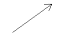 draws a straight line in any angle between two points.
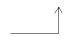 begins an L90 shape with a horizontal line segment and alternates between horizontal and vertical.
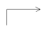 begins an L90 shape with a vertical line segment and alternates between vertical and horizontal.
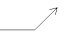 draws either a horizontal or vertical line segment first, then a 45-degree angle.
 draws a 45-degree angle first, then either a horizontal or vertical line segment.
draws a 45-degree angle first, then either a horizontal or vertical line segment.
Lock Angle appears only when Draw Mode is set to 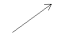 .
any draws a line using any angle.
45 restricts cursor movement to 45-degree angles from the starting point.
Related topics
Creating Custom Pins as Graphic Images
Add Generic – VHDL Properties
Use this form to add a VHDL property. It is accessed by clicking Add on the VHDL Properties form.
Name specifies the generic name.
Type specifies the generic type.
Value (Optional) specifies a value for the generic.
Related topics
Add Instance
Use this form to place multiple copies of a single instance in a schematic, based on a single lib/cell/view name instances. It is accessed using the Create – Instance command.
Library specifies the library that contains the instance.
Cell specifies the instance cell name.
View specifies the instance view name.
Names specifies the names of the components you want to add to the design.
Browse opens a browser. Use the Commands tab in the Editor Options form (Options – Editor command) to specify which browser, the Library Browser or Component Browser, the system opens.
all terminals creates wire stubs for all terminals in the cellview.
Environment Variable: allTerms
registered terminals only creates wire stubs only for those terminals that are registered with a net. See also the Register Net Name per Terminal form.
Displays the Net Name Registration form. For any terminal displayed in the left column, you can enter a net name in the opposite, right, column. Once you have then selected OK, the net names that have been entered are registered as the default net names for the corresponding terminals. Additionally, you can unregister existing registered terminals by ensuring the adjacent column is empty.
The registered net names will then be used when wire stubs are created using either the Create – Instance or the Create – Wire Stubs and Names commands, in the current session.
Environment Variable: addStubs
Array lets you create multiple copies of the specified instance in a single operation.
Rows specifies the number of rows.
Columns specifies the number of columns.
Rotate turns an object in 90-degree increments counterclockwise around the current reference point.
Sideways mirrors the object across an imaginary vertical line passing through the current reference point.
Upside Down mirrors the object across an imaginary horizontal line passing through the current reference point.
(Virtuoso RF Solution Option) Click to Edit Models button opens the Stackup Editor form which lets you store substrate geometry and material properties for a stackup instance. For more details, refer to Create Stackup.
Related topics
Add Kanji Note
Use this form to generate a new kanji note symbol based on an existing Japanese EUC packed (multiple-width) formatted file. It is accessed using the Create – Note – Kanji Note command.
Kanji EUC File specifies the path for an existing EUC-packed formatted file. Leave this field blank if you are creating a new file.
File Editor Open
starts the kanji text editor and creates a new EUC packed formatted file. The software automatically names the file by adding a string ( _kanji_ ) and a unique number to the current schematic name and by adding the .doc suffix. The software displays the new filename in the Kanji EUC File field.
Library Name
Cell Name
specifies the cell where you want the software to create the new kanji symbol. When you start the kanji text editor, the software automatically generates a default cellname by appending the current schematic cellname with a string ( _kanji_ ) and a unique number.
The software stores the following display parameter settings as cell-level CDF parameters.
Scale Factor
specifies a floating-point number for the character size. A value of 1.0 represents a character that is 50 database units high and 50 database units wide, which is the resolution used in the vector files. The default is 0.5.
Horizontal Spacing specifies the prescaled X distance between adjacent characters. The default value is 20 database units.
Text Direction specifies how the kanji text editor writes the text in the schematic.
horizontal causes the editor to write the text from left to right.
vertical causes the editor to write the text from top to bottom.
Vertical Spacing specifies the prescaled Y distance between adjacent characters. The default value is 20 database units.
Related topics
Configuring and Using Kanji Notes
Add New Property for Search
Use this form to add a property name to the search list. It is accessed by either the Schematic Select By Property or the Symbol Select By Property forms and selecting other in the Find cyclic field.
Property Name specifies a name for the property you want to add to the list of property names on the Schematic Select By Property form.
Related topics
Adding a Property Name to the Search List
Add New Property to Find
Use this form to add a new property to search for in the Schematic Find form. It is accessed from the Schematic Find form by selecting other from the Search For field.
Property Name specifies a name of the property you want to add to the property name search list on the Schematic Find or Symbol Find form.
Related topics
Searching for Objects That Have a Specific Property
Add New Property to Find/Replace
Use this form to add a new property to find/replace in the Schematic Find form. It is accessed from the Schematic Find form by selecting other from the Search For field.
Property Name specifies a name of the property you want to add to the property name search list on the Schematic Replace or Symbol Replace form.
Related topics
Add Property – Edit Object Properties
Use this form to add a new property. It is accessed by selecting Show option user and clicking Add on the Edit Cellview Properties form.
Name specifies a name for the new property.
Type specifies a property type.
Value specifies a value for the property.
Choices appears when Type is set to string. If the string can have more than one value, type the possible values. Entries in this field must match an entry in the Value field.
Min and Max appear when Type is set to int or float. Specify a range for the minimum and maximum range for the integer or floating-point value.
Related topics
Add Selection Box
Use this form to specify whether to draw a symbol selection box manually or automatically. It is accessed from the symbol editor using the Create – Selection Box command.
Use your mouse to indicate two opposite vertices of a rectangle that contains the objects you want to select, or click Automatic.
Automatic adds a selection box that contains all the objects that make up the symbol.
Related topics
Add Symbol Label
Use this form to create a label for a symbol. It is accessed from the symbol editor using the Create – Label command.
Label specifies the label name. The system fills in this field automatically, depending on the option you select from the Label Choice cyclic field.
Font Height specifies the height of the text in user units. Default font height is 0.0625.
Environment variable:
Label Choice contains a list of valid label types.
instance label is an NLPLabel used to display an instance name.
device annotate is an NLPLabel used to annotate the reference designator information from a package in the PCB layout onto the schematic. Historical.
logical label is an NLPLabel used to display the part name for PCB layout. Historical.
physical label
is an NLPLabel used to display the userPartName or phyPartName property values for PCB layout. Historical.
pin name is a normalLabel used to display a specified pin name.
pin annotate is an NLPLabel used to annotate the corresponding pin number from a package in the PCB layout onto the schematic. Historical.
analog instance label
is an ILLabel used to display various instance name/type information. The display can be configured using the Edit – Component Display command, which shows the label name as cdsName() where you type a name between the parentheses. The cdsName SKILL function is internally configured and evaluated by the schematic editor and is not intended for direct evaluation by the user. It displays label information (usually placed on the layer annotate drawing7) about the cell name or instance name. The cdsName function is attached to a cell symbol view when you use the Add Symbol Label form. The Annotation Setup form is used to control the display of this label type. The CDF Interpreted Labels Information sections of both the library and component are also used to configure what this label displays. The pertinent Interpreted Labels Information parameters are instDisplayMode and instNameType.
analog pin annotate
is an ILLabel used to display various information about a specified pin or terminal. The default pin name display is set up in the CDF. You can change display options using the Edit – Component Display command, which shows the label name as cdsTerm(""), where the terminal name is enclosed with quotation marks. The cdsTerm SKILL function is internally configured and evaluated by the schematic editor and is not intended for direct evaluation by the user. It displays label information (usually placed on the layer annotate drawing8) about the pin or net attached to the pin. The cdsTerm function is attached to a cell symbol view when you use the Add Symbol Label form. The Annotation Setup form is used to control the display of this label type. The CDF Interpreted Labels Information sections of both the library and component are also used to configure what this label displays. The pertinent Interpreted Labels Information parameters are termDisplayMode, termSimType, and netNameType.
analog device annotate
is an ILLabel used to annotate various device or simulation-specific data onto the schematic. This lets you display component/model/operating point data which you can configure using the Edit – Component Display command, which shows the label name as cdsParam(1), numbered sequentially starting with 1. The specific data for each type that can be annotated is specified in the cell CDF. Multiple device annotation parameters should be entered with increasing numbers between the parentheses to indicate which parameter in the list specified in the CDF to display. The cdsParam function is internally configured and evaluated by the schematic editor and is not intended for direct evaluation by the user. It displays label information (usually placed on the layer annotate drawing) about the parameter values or backannotated parameter values. The cdsParam function is attached to a cell symbol view when you use the Add Symbol Label form. The Annotation Setup form is used to control the display of this label type. The CDF Interpreted Labels Information sections of both the library and component are also used to configure what this label displays. The pertinent Interpreted Labels Information parameters are paramDisplayMode, paramLabelSet, opPointLabelSet, modelLabelSet, paramEvaluate, and paramSimType.
Environment variable:
Font Style specifies the font the system uses to display the label.
Environment variable:
Label Type specifies how the system displays the label in the design.
normalLabel displays the label as a text string.
NLPLabel interprets the label according to netlisting rules and displays the result.
ILLabel interprets the label as a SKILL expression and displays the result.
Environment variable:
Justification specifies the position of the cursor with respect to the text.
Environment variable:
Rotate turns the note text counterclockwise in 90-degree increments around the reference point.
Related topics
Add Symbol Shape
Use this form to create your own symbols. It is accessed from the symbol editor using the Create – Shape command.
Shape specifies a shape you can add to your design. You can select Line, Rectangle, Polygon, Circle, Ellipse or Arc.
Environment variable:
Fill Style determines whether the shape is filled or not.
outline draws just the border.
filled fills in the specified shape.
Environment variable:
Line Width specifies the width of the line you want to add.
narrow draws a line using the default setting of 0.0625 user units.
wide lets you edit the default width.
Environment variable: shapeLineWidth
Environment variable:
Draw Mode specifies the line entry method.
draws a straight line in any angle between two points.
begins an L90 shape with a horizontal line segment and alternates between horizontal and vertical.
begins an L90 shape with a vertical line segment and alternates between vertical and horizontal.
draws either a horizontal or vertical line segment first, then a 45-degree angle.
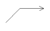 draws a 45-degree angle first, then either a horizontal or vertical line segment.
Environment variable:
Lock Angle appears only when Draw Mode is set to .
any draws a line using any angle.
45 restricts cursor movement to 45-degree angles from the starting point.
Related topics:
Add Wire
Use this form to change the characteristics of wires. It is accessed using Create – Wire (narrow) or Create – Wire (wide).
Draw Mode specifies the wire entry method.
route (default) creates a route between two points.
draws a straight line in any angle between two points.
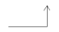 begins an L90 shape with a horizontal line segment and alternates between horizontal and vertical.
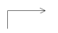 begins an L90 shape with a vertical line segment and alternates between vertical and horizontal.
 draws either a horizontal or vertical line segment first, then a 45-degree angle.
draws either a horizontal or vertical line segment first, then a 45-degree angle.
draws a 45-degree angle first, then either a horizontal or vertical line segment.
Environment Variable:
Route Method specifies how the system routes wires. This option appears when you set Draw Mode to route.
full draws complex lines consisting of right angles and up to three segments to complete the connection wire.
direct draws a straight line between two points.
flight draws a dashed, straight line between two points.
Environment Variable: defWideWireWidth
Lock Angle
appears when Draw Mode is set to  . Use this option to control the cursor movement.
. Use this option to control the cursor movement.
any (default) lets you drag your cursor along any angle.
45 limits cursor movement to 45-degree angles.
Width specifies the wire width in user units. The default values are 0 (zero) for a narrow wire and 0.0625 for a wide wire.
Environment Variable:
Color specifies the color of the wire.
Line Style specifies the line style of the wire.
Related topics
Annotation Setup
Use this form to change the annotation settings of the design components. It can be accessed using the View – Annotations – Setup command.
Simulation Data Directory sets the simulation data directory for annotation.
Library lists all the libraries in the design.
Cell lists all the cells within the selected library in the design.
Instance lists all the instances in the selected cell in the design.
Selected List lists all the instance names of the type selected from the Instance drop-down list.
Label displays the type of ilLabel present in the design for the selected instance.
Display Mode displays the available display modes for the ilLabels.
You can select the operating point parameter, component parameter, model parameter, instance name, cell name, pin name, net name, voltage, and current options from the drop-down list depending upon the selected ilLabel.
Expression lists the expressions for the parameter labels.
Annotate displays or hide annotations on the schematic.
Balloons displays or hide annotations on annotation balloons.
Related topics
Build Inherited View List
Use this form to select the appropriate views and constants to add to the Inherited View List list box. It is accessed by switching the As Is button off in the Inherited View List field on the Set Instance Binding form.
Available Constants/Views provides a selection list of available constants and views. The list is made up of constants that have been defined for this design and the union of all views of the selected instances.
Arrow keys move the selected elements into and out of the Inherited View List box.
Inherited View List specifies the contents of the new Inherited View List box that you are creating.
Add lets you type in other views to add.
Up moves the selected view in the Inherited View List box up one position in the list.
Down moves the selected view in the Inherited View List box down one position in the list.
Related topics
Building a New Inherited View List
Cellview From Cellview
Use this form to create a new
Library Name specifies the library that contains the source cellview. The default library name is the current library.
Cell Name specifies the cell name. The default cell name is the current cell.
From View Name contains a list of the existing views for the source cellview.
To View Name specifies the view name of the cellview the software generates when you click OK or Apply. The Tool / Data Type setting initializes this field. You can edit this field.
Tool / Data Type specifies the type of cellview to be created.
Browse opens the Library Browser. You can use the browser to select the library, cell, and view names. The system automatically fills in the form with the information you specify in the browser.
Display Cellview when enabled, causes the software to open the newly created cellview in an editor window when you complete the cellview generation process.
Environment Variable:
Edit Options when enabled and on completion of the Cellview From Cellview form, displays the Symbol Generation Options subform. Use this form to specify other options.
Environment Variable:
Related topics
Automatically Creating a Cellview from Another Cellview
Cellview From Instance
Use this form to create a cellview from an instance using the command Create – Cellview – From Instance.
View Name specifies the type of cellview the software generates when you click OK. The Tool / Data Type setting initializes this field.
Tool / Data Type specifies the type of cellview to be created.
Display Cellview , when enabled (default), causes the system to open the newly created cellview in an editor window when you complete the cellview generation process.
Related topics
Automatically Creating a Cellview from an Instance
Cellview From Pin List
Use this form to create a cellview from existing pins, such as those from the basic pin library, or you can create the cellview from new pin names. It is accessed using the Create – Cellview – From Pin List command.
Input Pins specifies an input pin list either from any library or expressed as a new pin name.
Output Pins specifies an output pin list either from any library or expressed as a new pin name.
IO Pins specifies an input/output pin list from any library or expressed as a new pin name.
Switch Pins specifies a switch level pin list from any library or expressed as a new pin name.
Jumper Pins specifies a jumper pin list from any library or expressed as a new pin name.
Tristate Pins specifies a tristate pin list from any library or expressed as a new pin name.
Unused Pins specifies an unused pin list from any library or expressed as a new pin name.
Library Name specifies the library name for the generated cellview. The default library name is the current library.
Cell Name specifies the cell name for the generated cellview.
View Name specifies the type of cellview the software generates. The Tool / Data Type setting initializes this field.
Tool / Data Type specifies the type of cellview to be created; for example, Schematic Editor – Symbol.
Browse opens a Library Browser. Use the browser to select the library name, cell name, and view name. The system automatically fills in the form with the information you select in the browser.
Display Cellview , when enabled, causes the software to open the newly created cellview in an editor window when you complete the cellview generation process.
Environment Variable:
Edit Options , when enabled, displays a subform when you complete the Cellview From Pin List form. Use the subform to specify other options.
Environment Variable:
Related topics
Automatically Creating a Cellview from a Pin List
Cellviews with Evaluated Net Expression Name
Use this form to view a full list of cellviews that contain net expressions that evaluate to the selected evaluated name. It is accessed using the Edit – Net Expression – Evaluated Names command and selecting List Cellviews with Selected Evaluated Name.
Cellview shows the full list of cellviews that contain net expressions that evaluate to the selected evaluated name.
Property Name shows the property name in the list of cellviews.
Default Value shows the default value (usually a global name) in the list of cellviews.
Number of Occurrences shows the number of occurrence paths down the hierarchy to a cellview which has a net expression that evaluates to the specified name.
Related topics
Viewing the Evaluated Net Names
Change Sheet Border Size
Use this form to change the existing size and type of a schematic border, using the Edit – Sheet Size command.
Border Size specifies the new sheet size to use in the schematic.
A changes the sheet to an A-size sheet with a vertical orientation, as it would appear in a book.
none deletes an existing sheet border; otherwise, this option does not affect the sheet. When you select this option, the system ignores the Border Type field.
Border Type specifies the sheet border type.
basic (default) changes the sheet to include global and sheet-specific border titles in the title block.
continue changes the sheet to include sheet-specific border titles in the title block.
Related topics
Editing the Sheet Border Size and Type
Check Hierarchy
Use this form to define the options to be run when you choose the Check – Hierarchy command.
Process specifies which schematics the system checks.
every schematic checks all schematics in the hierarchy.
only those that need it (default) checks only those schematics that have been updated since the last time you saved your design.
Environment variable:
Referenced libraries specifies whether the hierarchy check continues outside of the current library.
check activates the text field so you can edit the list. When you click Apply or OK, the system checks the libraries displayed in the field.
do not check (default) checks only the current library; the libraries that appear in the text field are not checked.
Environment variables: ,
Open for specifies the mode in which the cellview is opened for the hierarchy check.
auto (default) checks the hierarchy in the same mode as the top cellview.
edit checks the hierarchy in editable mode.
read checks the hierarchy in read-only mode.
Environment variable:
Save schematics specifies whether the system saves schematics when the check operation is complete.
yes (default) saves the checked schematics.
no does not save the checked schematics.
those with errors appears only when you select yes. This option specifies how the system handles schematics that contain errors.
Ask Me (default) prompts you to confirm which of the displayed schematics you want to save.
No Save does not save any schematics that contain errors.
Save saves all schematics even when they contain errors.
Environment variable:
View Name List displays a scrollable list of views that is used to traverse the hierarchy.
When the schematic is in the context of a design configuration or a hierarchy configuration, the following two fields appear:
Using configuration displays the configuration name using the format lib cell view.
Starting from displays the name of the top level cellview using the format lib cell view.
Related topics
Check Label Attachment
Use this form to highlight the association between a label and its owning object (that is, a wire or an instance). It is accessed using the Check – Label Attachment command.
Show labels of controls which labels that you want to check as being attached to particular objects on the canvas.
wire displays wire label attachments on the canvas.
instance displays instance label attachments on the canvas.
both displays both wire and label attachments on the canvas.
none hides all label attachments on the canvas.
Close closes the Check Label Attachment form and automatically removes the label attachments. This action will also reset the selection to none.
Refresh updates the label display on the canvas. This can useful, for example, if objects have been moved or deleted while the Check Label Attachment form is still on display.
Related topics
Component Browser
Use this form to add component instances from a library. If the Add Instance Browser Type option on the Editor Options form, is set to component, this form is accessed using the Create – Instance command.
Library specifies the library that contains the component you want to add.
Flatten controls whether the list box displays cell categories (default; turned off) or cells (turned on) contained in the specified library. The display changes when you toggle this option.
Filter specifies a text string that limits the list box display to categories or cells that contain the text string. The display changes when you click the Library option.
Remove appears only when you use the Commands – Add Library command to expand the form. This option lets you remove the associated library from the form.
The list box displays the categories or cells contained in the library (see Flatten).
Related topics
Component Browser Preferences
Use this form to specify your preference on whether the Component Browser or Add Instance form is opened when the Create – Instance command is run. This form is accessed using the Commands – Preferences command.
Browser Opens with the Invocation of when turned on (default), the system opens the Component Browser when you click the Browse button on the Add Instance form.
Status of Browser After Closing defines what happens to the Component Browser when you close the Add Instance form.
icon (default) collapses the window into an icon.
open leaves the Component Browser window open.
closed closes the Component Browser window.
Related topics
Copy
Use this form to copy an object. It is accessed using the Edit – Copy command.
Snap Mode specifies the angles along which you can move copied objects within the cellview.
anyAngle (default) lets you move the copied objects along any angle.
diagonal restricts the movement of copied objects to points along 45-degree, 90-degree, and 180-degree angles from the current location.
orthogonal restricts the movement of copied objects to points along the X and Y axes from the current location.
Array lets you create multiple copies of a selected object in a single operation and specify the dimensions of the array.
Rows specifies the number of rows.
Columns specifies the number of columns.
Include Design Intent lets you specify whether the design intent associated with the object is also included in the copy.
Environment variable:
Rotate turns an object in 90-degree increments counterclockwise around the current reference point.
Sideways mirrors the object across an imaginary vertical line passing through the current reference point.
Upside Down mirrors the object across an imaginary horizontal line passing through the current reference point.
Related topics
Create a Mapping Schematic Step 1 of 2
Use this form to create a mapping schematic so you can switch between design tasks without the need to modify existing cells or the design text file. It is accessed using the command Create – Mapping Schematic.
Lower Level Cellview Specifies the lower-level library, cell and view names.
Library Specifies the library that contains the cell and the view that are considered as the lower-level cellview.
Cell Specifies the cell that contains the lower-level cellview.
View
Specifies the lower-level cellview. By default, you can only specify the schematicSymbol views in this form. However, you can set the browserShowSchViews to t for specifying the schematicSymbol and schematic views in the Lower Level Cellview and Upper Level Cellview.
Upper Level Cellview Specifies the pins of the lower-level cellview, that are to be connected to the pins in the upper-level cellview.
Library Specifies the library that contains the cell and the view that are to be considered as the upper-level cellview.
Cell Specifies the cell that contains the upper-level cellview.
View Specifies the upper-level cellview.
Mapping Schematic Specifies the mapping schematic view name.
View Name
Specifies the mapping schematic view name. The default view name is of the form <lowerCell_cellName>. This can be changed as required.
Environment variable: mapCvMappingSchViewName
Next Displays the Create a Mapping Schematic Step 2 of 2 form. This button becomes available only after you have specified valid library, cell, and view names for both the lower- and upper-level cellview references.
Related topics
Create a Mapping Schematic Step 2 of 2
Use this form to map the unmapped nets in the Lower Level Cellview (specified in
Unmapped Nets Lists the current unmapped nets in each of the lower- and upper-level cellviews.
Mapped Nets Lists those nets that are mapped between the lower and upper-level cellviews.
Auto-Map Automatically maps the nets listed under Unmapped Nets, displaying the newly mapped nets under Mapped Nets.
Map Maps the lower- and upper-cellview nets that are currently selected under Unmapped Nets. This button is available only when two nets that can be mapped are selected.
Clear De-selects any maps that are currently selected under Unmapped Nets.
Other Setup:
Specific options in the Other Setup group box become available when a pin in either of the two symbol views is selected. Moreover, the options become available based on the type of pins that are currently selected.
Unconnected
If selected, this option leaves the selected pin unconnected when Add is performed. This ensures that the pin is connected to a noConn instance.
noConn symbol, then the noConn instance that is connected to that iterated pin has the same width as the iterated pin.Connected To If selected, connects the selected pin to the specified net name.
Net Expression If selected, connects the selected lower-level symbol pin to a wire with a net expression that has the specified Property Name and Default Global Net, as explained below.
Property Name Specifies the net expression property name.
Default Global Net Specifies the net expression default global net name.
Net Set
If selected, the lower-level instance has a netSet property associated with it, with the overridden net being specified in the Override Net field.
Add Maps nets based on the specifications listed above and adds them to the Mapped Nets list.
Unmap Removes the mapping between the nets selected in the Mapped Nets list, and then displays the unmapped nets under Unmapped Nets.
File Specifies the location of the text file that contains the mapped net settings. You can do both, load the settings from a file or save the settings to a file.
Clicking the browse button locates the file from which you want to load the settings. The files are listed in the Choose a File form.
Load From Loads mapped net settings from the text file listed in the File field.
Save To Saves mapped net settings to the text file listed in the File field.
Related topics
Create Block
Use this form to create multiple blocks, each with a different lib/cell/view name. It is accessed using the Create – Block command.
Library specifies the library in which you want to add a new block. The default is the library for the current design.
Cells specifies the cell name of the block you want to create. You can specify multiple cell names by using a space to separate each name. The Cells and Names fields must match in number. If there are more entries in Cells than in Names, the system assigns a name for each. If there are more entries in Names than in Cells, the system ignores the extra names.
View specifies the view you want to create. The default is symbol.
Names specifies the name of the cell. Only one name (instance) can be entered for each cell. There is a one-to-one correspondence between the entries in the Cells and the Names fields. You can specify multiple cell names by using a space to separate each name. The Cells and Names fields must match in number. If there are more entries in Cells than in Names, the system assigns a name for each. If there are more entries in Names than in Cells, the system ignores the extra names.
Pin Name Prefix specifies a name that the system uses to name all the pins that the system creates automatically when you connect wires to this block. The default is pin.
Environment variable:
Block Shape lists a drawing option and a predefined set of presized blocks that you can add to the design.
freeform prompts you to drag your cursor between two points to specify the opposite corners of a rectangle. The system draws the rectangle as you drag the cursor.
The default set of presized blocks includes small, medium, large, 2 by 1, 1 by 2, alu, mux4, and mux8.
Related topics
Create Cellview Dialog Box – Replace or Modify
Use this dialog box to replace or modify the existing cellview. It is displayed when creating a cellview using the Cellview From Cellview form if the symbol cellview to be created already exists.
Replace does the following to a cellview:
- Discards any modifications you may have made to that cellview
- Creates only the pins, properties, selection box, labels, and other graphics; all schematic instances, schematic wires, and HDL body text are lost
- May alter the position of pins in the new symbol cellview
Modify does the following to a symbol cellview:
- Automatically edits the cellview with a minimal amount of changes to the current pin locations, graphics, and properties within the symbol cellview
- Deletes pins that are no longer needed
-
Adds pins that do not yet exist in the new cellview
Pins are added near the bottom of the cellview. Use the symbol editor to reposition these new pins and to adjust any symbol graphics. The system determines attributes of the new pins by the currently active TSG template file. - Adds or updates cellview properties and terminal properties
- Annotates the changes that were made in note format at the bottom of the cellview and in the Command Interpreter Window (CIW)
- Does not delete cellview or terminal properties
Related topics
Automatically Creating Cellviews
Create Net Expression
Use this form to add a net expression label to a wire. It is accessed using the Create – Net Expression command.
Property Name specifies the name of the property that can be used to override the default global signal; in other words, the name of the property whose value redefines the name of the net. The system evaluating the expression searches for the property that has this name to get the value to inherit for the net.
Default Net Name
specifies the global signal name to be used for the net associated with this net expression label. The system uses the default net name—for example vdd!, gnd!, or vss!—when a netSet property has not been found on an instance of the current hierarchical path. The name must specify a global single-bit value.
Derive from property name check box enables, when selected, the Default Net Name field to be automatically seeded based on the Property Name specified. By default, Derive from property name is deselected.
Font specifies the appearance of the net expression label text in the design.
Height specifies the height of the net expression label text in user units. The default font height is 0.0625.
Style specifies the font used to display the net expression label.
Justification specifies the position of the cursor with respect to the text.
Entry Style specifies the mechanism for placing the net expression label on a wire or pin.
fixed offset automatically positions the net expression label at a specified distance from the wire or pin.
manual requires you to place the net expression label at a grid location on or near the wire or pin.
Horizontal Objects specifies position, offset, and rotation angle for the net expression labels in horizontal objects.
Vertical Objects specifies position, offset, and rotation angle for the net expression labels in vertical objects.
Rotation turns the label text counterclockwise in 90-degree increments around the reference point.
Related topics
Adding Net Expression Labels to Create an Inherited Connection
Create Note Shape
Use this form to add an annotation within a defined shape on your design. It is accessed using the Create – Note – Shape command.
Shape specifies a shape you can add to your design to outline the note text. The shape options available are:
Environment variable:
The options available depend on the Shape option you select and the form expands and contracts to accommodate this.
Dashed line check box specifies the line style used to draw the shape. When selected, a dashed line replaces the default solid line.
Environment variable: noteShapeLineStyle
Wide
line
check box specifies if a line setting wider than the default 0.0625 user units is to be used. This check box is displayed only when the Shape is set to line. When selected, the Width option is enabled for you to specify the actual width of line to be used.
Environment variable: shapeLineWidth
Width
specifies the width of the line used to draw the shape and is displayed only when the Shape is set to line and the Wide line check box has been selected. Enter or select the width you require.
Draw Mode
appears only when the Shape is set to line and polygon. It specifies the line entry method.
draws a straight line in any angle between two points.
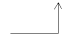 draws two line shapes. The first is horizontal; the second is vertical.
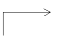 draws two line shapes. The first is vertical; the second is horizontal.
 draws either a horizontal or vertical line segment first, then a 45-degree angle.
draws either a horizontal or vertical line segment first, then a 45-degree angle.
 draws a 45-degree angle first, then either a horizontal or vertical line segment.
draws a 45-degree angle first, then either a horizontal or vertical line segment.
Lock to 45 degrees
appears only when Draw Mode is set to  . It toggles between drawing a wire using any angle (default) and restricting cursor movement to 45-degree angles from the starting point.
. It toggles between drawing a wire using any angle (default) and restricting cursor movement to 45-degree angles from the starting point.
Environment variable:
Text specifies the text to be displayed with the shape. You can either type the text or use the File option to load the text from a file. You can edit the text in this window, but the Font options specified will only be visible when the Note Shape is created on the design.
File copies in a file and displays the file contents in the Text field. You can either enter the filename or use the Browse (...) button to display the Choose a File form, where you can select the file required. This action overwrites any text you entered in the text box. To read in the file, specify the path to the text file, click Read File. When the file contains characters that cannot be displayed, the system issues a warning and removes the characters before copying in the file.
Font specifies the appearance of the note text in the design. Any changes will only be visible when the Note Shape text is created on the design:
Height specifies the height of the text in user units. The default font height is 0.0625.
Style specifies the font used to display text.
Justification specifies the position of the cursor with respect to the text.
Overbar check box is a display option. You use this option to specify whether the software displays an overbar over the note text. When this option is disabled (default), the software displays underscore characters ( _ ) in the note text as part of the note text string. When this option is enabled, the software interprets underscore characters ( _ ) in the note text as toggle switches that control where overbars begin and end. Overbars appear above the property label, as shown in the examples.
Related topics
Create Note Text
Use this form to add an annotation on your design. It is accessed using the Create – Note – Text command.
Text specifies the text to be displayed with the note. You can either type the text or use the File option to load the text from a file. You can edit the text in this window, but the Font options specified will only be visible when the note text is created on the design.
File copies in a file and displays the file contents in the Text field. You can either enter the filename or use the Browse (...) button to display the Choose a File form, where you can select the file required. This action overwrites any text you entered in the text box. To read in the file, specify the path to the text file, click Read File. When the file contains characters that cannot be displayed, the system issues a warning and removes the characters before copying in the file.
Font specifies the appearance of the note text in the design. Any changes will only be visible when the text is created on the design:
Height specifies the height of the text in user units. The default font height is 0.0625.
Environment variable: noteFontHeight
Style specifies the font used to display the text.
Environment variable: noteFontStyle
Justification specifies the position of the cursor with respect to the text.
Environment variable: noteJustify
Drafting maintains the normal orientation of the text as you flip a note 180-degrees around a reference point. When this option is disabled, rotated text appears upside down. The default is for this option to be on.
Overbar check box is a display option. You use this option to specify whether the software displays an overbar over the note text. When this option is disabled (default), the software displays underscore characters ( _ ) in the note text as part of the note text string. When this option is enabled, the software interprets underscore characters ( _ ) in the note text as toggle switches that control where overbars begin and end. Overbars appear above the property label, as shown in the examples.
Rotation turns the note in 90-degree or 180-degree increments around the reference point.
Rotate Left turns the note 90-degrees anti-clockwise.
Rotate Right turns the note 90-degrees clockwise.
Flip Vertical flips the note vertically180-degrees.
Flip Horizontal flips the note horizontally 180-degrees.
Related topics
Create Patchcord
Use this form to add a patch cord which establishes aliases between the signals of two different nets. It is accessed using the Create – Patchcord command.
Add net stubs automatically adds two net stubs when adding a patch cord symbol. When disabled, a simple patch cord instance will be created.
ascending (only enabled) allows for a single prefix to be entered, and the alias net will be set up as a bus which depends upon the number of nets entered in the Design Nets field. The preview option to the right of the Alias Nets/Prefix option provides an example of what this bus will appear as.
auto and ascending
(both enabled) instructs that the alias bus will display as alias<0:3>, assuming there are four design nets, otherwise it will display as alias<3:0>.
Alias Nets/Prefix specifies a single string (if auto indexing is enabled) that will provide the name to be used for the alias net or bus. If auto indexing is disabled, then this can be one or more, comma separated, net names. The number of net names must however match the number of nets entered in the Design Nets field.
Design Nets
displays a list of comma separated net or bus names, for example “in, x, cntrl, data<0:3>”.
Style specifies the format of the patch cord to be placed. You can select between straight, which displays a horizontal layout, with both nets and patch cords in a straight line, or curved, where the layout is a horseshoe shape, with a vertical patch cord and horizontal nets. The Preview field, below the Style field, graphically illustrates your current selection.
Bundle Display lets you select the bundle display mode, horizontal or vertical, for the Design Nets if the Add net stubs option is enabled and the design net being placed is a bundle. The Bundle Display option will be disabled if the Design Nets option is empty or if the design net is not a bundle.
A bundle is a wire or pin name consisting of simple names separated by a comma; for example, S,R.
Related topics
Adding Patch Cords Using the Create Patchcord Form
Create Pin – Schematic
Use this form to create a
Names
specifies the names for the pins you want to add to the design and the order in which you want to place them. To add more than one pin name, use a space to separate each name. When you enable the Expand Busses option, you can use a bus expression to name an array of pins. You need not specify the name if you have enabled automatic pin naming by using the environment variable.
Direction contains a list of the directions you can specify for the pins you want to add. switch is maintained solely for backward compatibility: Cadence discourages its use. The default is input.
Usage contains a list of the pin types you can specify for the pins you want to add. The default is schematic. Use offsheet only when you are going to connect the added pins to another sheet in a multisheet schematic.
Signal Type specifies the new pin’s signal type. Signal type (sigType) setting is important in the areas of design verification, consistency checking for mixed-signal designs, and to also set routing constraints. Signal types to select from are analog, clock, ground, power, reset, scan, signal (default), tieHi, tieLo, tieOff, optical, singleModeOptical, or multiModeOptical. Refer to Defining Signal Types.
Expand busses check box determines how the schematic editor interprets bus names.
When deselected
(default) a bus name is interpreted as a single-bit name and a single pin that includes all the bits in the bus range is generated. For example, for the name A<0:1>, a pin called A<0:1> is generated.
When selected
a bus name is interpreted as multiple-bit name and a pin is generated for each bit of a bus range that you specify in the Names field. For example, for the pin A<0:1>, pins called A<0> and A<1> are generated.
Place multiple pins check box determines whether you can place multiple pins automatically in one operation.
When deselected (default) requires you to point and click to identify the location for each pin.
When selected prompts you to point and click to specify the first and second pin locations. The system uses the distance between these two points as a basis for automatically placing any remaining pins.
Attach to pin check box allows you to add a net expression to the pin. The Property Name and Default Net Name fields will be automatically seeded, based on the current Names, if the Derive from pin name option is enabled.
Derive from pin name check box enables the Property Name and Default Net Name fields on the Create Pin form to be automatically seeded with values derived from the Names currently being added. These values will continue to update if multiple pins are added simultaneously.
Property Name
specifies the name of the netSet property that can be used to override the default global signal; in other words, the name of the property whose value redefines the name of the net. The system evaluating the expression searches for the property that has this name to get the value to inherit for the net.
Default Net Name
specifies the global signal name to be used for the net associated with this label. The system uses the default net name—for example vdd!, gnd!, or vss!—when a netSet property has not been found on an instance of the current hierarchical path. The name must specify a global single-bit value.
Height specifies the height of the label text in user units.
Style specifies the font used to display the label.
Justification specifies the alignment of the label. Alignments to select from are automatic, lowerLeft, centerLeft, upperLeft, lowerCenter, centerCenter, upperCenter, lowerRight, centerRight, or upperRight.
Supply Sensitivity section determines how the values entered for power and ground terminals gets attached to the specified pins’ terminals.
Attach To drop-down list box lists the options to choose from while making the terminals of the next pin sensitive to the power or ground terminals. For more details, see Setting Supply and Ground Sensitivity (Schematic Window).
Both the terminal of the next pin will be made sensitive to any specified power and ground terminals.
Power terminal of the next pin will be made sensitive only to any specified power terminals.
Ground terminal of the next pin will be made sensitive only to any specified ground terminals.
None of the terminals of the next pin will be made sensitive to neither power nor ground terminals, specified or otherwise.
Power Pin type in, or select from the drop-down list (which includes all the single-bit terminals in the cellview), the names of the terminals that would make the effected pins’ terminals sensitive to the entered power terminals. By default, the field shows None before terminals are added to the cellview.
Ground Pin type in, or select from the drop-down list (which includes all the single-bit terminals in the cellview), the names of the terminals that would make the effected pins’ terminals sensitive to the entered ground terminals. By default, the field shows None before terminals are added to the cellview.
Rotate Left turns the pin in 90-degree increments counterclockwise around the reference point.
Rotate Right turns the pin in 90-degree increments clockwise around the reference point.
Flip Horizontal 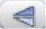 mirrors the pin across an imaginary vertical line passing through the reference point.
Flip Vertical mirrors the pin across an imaginary horizontal line passing through the reference point.
Related topics
Adding Schematic and Offsheet Pins
Create Pin – Symbol
Use this form to create a symbol pin. It is accessed from the symbol editor using the Create – Pin command.
Names specifies the names for the pins you want to add to the design and the order in which you want to place them. To add more than one pin name, use a space to separate each name. If you enable the Expand Busses option, you can use a bus expression to name an array of pins.
Direction contains a list of pin directions you can specify for the pins you want to add. switch is maintained solely for backward compatibility.
Bus Expansion specifies how the system interprets bus names.
off
(default) interprets a bus name as one name and generates only one pin that includes all the bits in the bus range. For example, for the name A<0:1>, the system generates only the pin A<0:1>.
on
interprets a bus name as multiple names and generates a pin for each bit of a bus range that you specify in the Pin Names field. For example, for the pin A<0:1>, the system generates pins A<0> and A<1>.
Type contains a list of the valid pin types.
Environment variable:
Signal Type specifies the new pin’s signal type. Signal type (sigType) setting is important in the areas of design verification, consistency checking for mixed-signal designs, and to also set routing constraints. Signal types to select from are analog, clock, ground, power, reset, scan, signal, tieHi, tieLo, tieOff, optical, singleModeOptical, or multiModeOptical. Refer to Defining Signal Types.
Expand busses check box determines how the system interprets bus names.
When deselected
(default) causes the system to interpret a bus name as a single name and generate a single pin that includes all the bits in the bus range. For example, for the name A<0:1>, the system generates only the pin A<0:1>.
When selected
causes the system to interpret a bus name as multiple names and generate a pin for each bit of a bus range that you specify in the Names field. For example, for the pin A<0:1>, the system generates pins A<0> and A<1>.
Place multiple pins check box determines whether you can place multiple pins automatically in one operation.
When deselected (default) requires you to point and click to identify the location for each pin.
When selected prompts you to point and click to specify the first and second pin locations. The system uses the distance between these two points as a basis for automatically placing any remaining pins.
Location specifies where the pin name (pin label) appears in respect to the pin.
Environment variable: symbolPinLocate
Offset specifies how far, in user units, the pin name (pin label) is from the pin.
Environment variable: symbolPinIncrCount
Supply Sensitivity section determines how the values entered for power and ground terminals gets attached to the specified pins’ terminals.
Attach To drop-down list box lists the options to choose from while making the terminals of the next pin sensitive to the power or ground terminals.
Both the terminal of the next pin will be made sensitive to any specified power and ground terminals.
Power terminal of the next pin will be made sensitive only to any specified power terminals.
Ground terminal of the next pin will be made sensitive only to any specified ground terminals.
None of the terminals of the next pin will be made sensitive to neither power nor ground terminals, specified or otherwise.
Power Pin type in, or select from the drop-down list (which includes all the single-bit terminals in the cellview), the names of the terminals that would make the effected pins’ terminals sensitive to the entered power terminals. By default, the field shows None before terminals are added to the cellview.
Ground Pin type in, or select from the drop-down list (which includes all the single-bit terminals in the cellview), the names of the terminals that would make the effected pins’ terminals sensitive to the entered ground terminals. By default, the field shows None before terminals are added to the cellview.
Rotate
Left
 turns the pin in 90-degree increments counterclockwise around the reference point.
turns the pin in 90-degree increments counterclockwise around the reference point.
Rotate Right turns the pin in 90-degree increments clockwise around the reference point.
Flip Horizontal mirrors the pin across an imaginary vertical line passing through the reference point.
Flip Vertical mirrors the pin across an imaginary horizontal line passing through the reference point.
Related topics
Create Schematic
Use this form to specify whether a single or multisheet schematic is created. It is displayed when creating a cellview from another cellview and you specify schematic in the Tool / Data Type field.
Schematic Type determines which type of schematic you create.
single creates a single sheet schematic.
multi-sheet creates a multisheet schematic and opens the first page so you can begin editing.
Environment variable: transToSheetType
Size specifies the size of the sheet border for the new schematic. The possible values are A through F, A Book, and none.
Type specifies the type of sheet border.
basic specifies global and sheet-specific border titles. This option creates a template only. To fill in the fields in the title box, use the Edit – Sheet Title command.
continue specifies a continuation border, which contains only specific border titles such as the sheet size and number.
Related topics
Automatically Creating a Cellview from Another Cellview
Create Schematic Sheet
Use this form to convert a single-sheet schematic to a multisheet schematic, using the Create – Multisheet command.
Number specifies the sheet number that the schematic editor creates when you click Apply or OK. The default sheet number is the next sheet number in the multisheet sequence. Valid choices are integers greater than zero (0).
Size specifies which sheet border size the editor uses for the new sheet. The valid choices are A through F, A Book, and none.
A Book creates an A-size sheet with a vertical orientation, as it would appear in a book.
none creates a new sheet without a sheet border. The system ignores the Type option when you select this option.
Type specifies the sheet border type.
basic (default) specifies a template that contains global and sheet-specific border titles. You use the Schematic Title Block Properties form to fill in the fields in the title box.
continue specifies the same sheet size and border titles as those used for the schematic in the current design window.
Related topics
Converting a Single-Sheet Schematic to a Multisheet Schematic
Create Wire Name
Use this form to add a wire name. It is accessed using the Create – Wire Name command.
Names specifies one or more names for wires. You can specify multiple names by separating each name with a space. You can also use a bus expression to name an array of wire names.
Expand bus names specifies how the system interprets bus names.
Deselected
(default) interprets the bus name as a single name and generates a single name that includes all the bits in the bus range. For example, for the name A<0:1>, the system generates only the name A<0:1>.
Selected
interprets the bus name as multiple names and generates a name for each bit of a bus range that you specify in the Names field. For example, for the name A<0:1>, the system generates names A<0> and A<1>.
Attach to multiple wires specifies how the system interprets bus names.
Deselected (default) requires you to point and click to identify each wire name location.
Selected lets you drag your mouse between two points to designate the wires that you want the system to name automatically.
Create net alias labels defines the purpose of the wire name.
Deselected (default) does not specify any net alias lables to the wire name.
Selected assigns the wire name to the corresponding wire and defines the wire name as an alternative name (usually shorter or more descriptive) for the wire.
Displays bundles vertically defines the display of comma separated bundle names.
Deselected (default) displays the bundle net names horizontally separated by a comma. For example,
Selected displays the bundle net names vertically so that each member net is displayed in a different row. For example,
Environment variable: bundleDisplayMode
Font Height
specifies the size of your wire name text as a floating-point value, in user units. The default is 0.0625.
Environment variable:
Font Style specifies the typeface the system uses to display the wire name.
Environment variable:
Justification specifies the position of the cursor with respect to the wire name.
Environment variables: , , , ,
fixed offset automatically positions the wire name at a specified distance from the wire.
manual requires you to place the wire name at a grid location on or near the wire.
Horizontal Wires specifies position, offset, and rotation angle for the wire name labels in horizontal wires.
Environment variables: createLabelHorzOffset, createLabelHorzPosition, createLabelHorzRotation
Vertical Wires specifies position, offset, and rotation angle for the wire name labels in horizontal wires.
Environment variables: createLabelVertOffset, createLabelVertPosition, createLabelVertRotation
Environment variable:
Rotate Left turns the pin in 90-degree increments counterclockwise around the reference point.
Rotate Right turns the pin in 90-degree increments clockwise around the reference point.
Related topics
Cross Reference Options
Use this form to display cross-reference annotations to schematic or offsheet pins. It is accessed using the Sheet – Cross Reference command.
Generate Cross Reference Report File specifies whether the system generates a cross-reference report file.
off (default) does not generate a cross-reference report file.
on generates a cross-reference report file.
View Report opens a view window that displays the report file you specify in the Report File field.
Report File specifies a name for the file where you want to store the cross-reference report.
Display Cross References in Schematic specifies whether cross-reference strings are displayed in the design window.
off does not display cross-reference strings.
on displays cross-references next to the pin in the schematic.
Cross Reference Format specifies how the system displays cross-references in the design window and report file.
Format String specifies the format of the text strings that the system displays in the design window. The default is
sheetNumberzonereferenceName
Environment variable: pinRefFormat
Show Duplicate Zones determines whether the system displays duplicate pin references found within one zone.
off does not display duplicate references.
on displays all duplicate references.
Environment variable: pinRefDuplicates
Sort References By determines how the system sorts the elements within cross-reference lists.
Di rection sorts the pins into groups by pin direction, then sorts the groups by sheet number and zone. The valid pin direction groups are input pins, output pins, and I/O pins. switch is maintained solely for backward compatibility: Cadence discourages its use.
Sheet Number sorts the reference list by sheet number and zone.
Environment variable: pinRefSorting
Related topics
Cross-View Checker
Use this form to check interface consistency between views. It is accessed using the Check – Cross View command.
Cross View Check Severity specifies the action system performs when pin names and pin directions do not match.
error generates error messages.
Environment variable:
Views To Check displays a list of the views checked by the cross-view checker when you click OK or Apply.
Match Pin Names Exactly
, when enabled, checks whether pin names match. For example, pins A<0> and A<1> in view1 and pin A<0:1> in view2 would not match.
Environment variable:
Check Pin Order when enabled (default), checks whether the pin order is consistent in all views in the Views To Check list mentioned above.
Only check views with explicit pin order
, when enabled (default), allows port order consistency check to run only on views with the portOrder property set.
Environment variable: vicIgnoreViewsWithNoSetPinOrder
Environment variable:
Match Inherited Terminals when enabled (default), checks whether inherited terminals match.
Ignore Terminals with Net Expression and no Terminal in the Other View when enabled (default), ignores all inherited terminal mismatches.
Environment variable: vicInheritedPinMatch
Ignore Terminals for Specified Views ignores the views specified (if any) in View Names.
Environment variable: vicIgnoreInhTermViewList
View Names specify a list of the views to be ignored by the cross-view checker.
Environment variable: vicViewList
All Terminals/Terminal Names when All Terminals is enabled all the terminals within the views specified in View Names will be ignored. When Terminal Names is enabled, the editable field to the right is also enabled for you to specify specific terminals to be ignored.
Environment variable: vicIgnoreInhTermList
Environment variables: ,
Match Terminal Net Expressions when enabled (default), checks whether terminal net expressions match.
Environment variable:
Match Terminal Supply Sensitivity when enabled (default), checks that terminal sensitivity and consistency is validated between the schematic and corresponding symbol cellviews.
Environment variable:
Match Terminal Signal Type when enabled (default), checks for signal type mismatches between the corresponding pins of the schematic and symbol views of a cell.
Environment variable:
Related topics
Delete All Markers - OpenAccess version
Use this form to define the markers of a particular severity level, and in a particular cellview or hierarchy that are to be deleted. It is accessed using the Check – Delete All Markers command.
Severity defines which level of markers the system deletes in the list box and in your design.
all deletes all markers of the types selected.
none deletes none of the markers of the types selected.
fatal error deletes fatal error messages.
acknowledged warning deletes acknowledged warning messages.
critical error deletes critical error messages.
signed off error deletes signed-off error messages.
info deletes information messages.
signed off critical error deletes signed-off critical error messages.
warning deletes only warning messages.
annotation deletes annotation messages.
Environment variable: markerDeleteSeverities
Search Scope defines the scope of the deletion.
cellview deletes markers from the current cellview only.
hierarchy starting from top cellview deletes markers throughout the entire hierarchy.
hierarchy starting from current cellview deletes markers throughout the hierarchy starting from the current cellview.
Environment variable: markerDeleteScope
Options enables you to specify whether the cellview is to be opened in edit or read mode.
Cellview Access Mode specifies the mode for opening a cellview. Environment variable: markerDeleteAccessModeIsEdit
read deletes all the markers and re-opens the cellviews in edit mode with no dialog box.
edit deletes all the markers after opening the cellview in edit mode. In this mode, you can choose to select the Confirm Access Mode Change check box and specify the cellviews to be opened in read mode.
Confirm Access Mode Change opens the Delete Marker dialog box for you to confirm whether you want to open the selected cellview in edit mode. Markers are not deleted in cellviews that stay in read mode. This check box is enabled only if Cellview Access Mode to set to edit. Environment variable: markerDeleteConfirmModeChange
Sources specifies the category of markers that are to be deleted in terms of the program that generated them.
SRC deletes schematic rules checker markers.
VIC deletes cross-view checker markers.
load deletes markers created when you opened the schematic as the source.
conn deletes connectivity markers
none appears when there are no messages in the list box.
Environment variable: markerDeleteSourcesMode, markerDeleteSources
Related topics
Delete Generic – VHDL Properties
Use this form to delete properties that represent VHDL generics. It is accessed using the Edit – Properties – VHDL command and then clicking Delete.
Name specifies the generic name.
Related topics
Delete Marker
Options enable you to specify whether the cellview is to be opened in edit or read mode.
Cellview Access Mode specifies the mode for opening a cellview.
Environment variable: markerDeleteAccessModeIsEdit
read deletes the selected markers and re-opens the cellviews in edit mode with no dialog box.
write deletes all the markers after opening the cellview in edit mode. In this mode, you can choose to select the Confirm Access Mode Change check box and specify the cellviews to be opened in read mode.
Confirm Access Mode Change opens the Delete Marker dialog box for you to confirm whether you want to open the selected cellview in edit mode. Markers are not deleted in cellviews that stay in read mode. This check box is enabled only if Cellview Access Mode to set to edit.
Environment variable: markerDeleteConfirmModeChange
Related Topics
Delete Property – Edit Object Properties
Use this form to list all the user-defined properties available to be deleted. It is accessed by clicking Delete from the Edit Object Properties – Basic form.
The list box displays a list of all the user-defined properties.
Delete All , when enabled, deletes all the displayed properties.
Related topics
Delete Schematic Sheet
Use this form to delete a sheet when editing the index schematic of a multisheet design. It is accessed using the Sheet – Delete command from an index schematic.
Starting Number
specifies the first number of a range to delete. The default is 0.
Ending Number
specifies the last number of a range to delete. If you specify same or do not specify the last sheet number in the range, only the current sheet is deleted. The default is same.
Related topics
Descend Edit/Read
Use this form to descend into a lower-level view of an instance. It is accessed by choosing the Edit – Hierarchy – Descend Edit / Read command and then selecting an instance in your design to descend into.
Iteration Number lets you type the iteration you want to descend into. This option is available for iterated instances only.
View select the view you want to descend into.
Open for choose the mode that you want to open the selected View in.
edit opens the view in edit mode
read opens the view in read mode
auto opens the view dependent on current edit permission
Open in choose the method you want to display the descended cell view in. This option is available for single and multisheet instances only.
new tab opens the view in a new tab
current tab opens the view in the current tab (the default)
new window opens the view in a new window
Environment variable:
Display specifies the type of sheet you want to descend into. This option is available for symbols representing multisheet designs only.
index descends into the index sheet.
sheet (default) descends into the sheet number you specify.
Related topics
Descending Using the Descend Command
Display Options
Use this form to change the window display and grid controls. It is accessed using the Options – Display command.
Background Color lets you choose the background color of the canvas. The color of the objects on the canvas is adjusted automatically for better visibility.
Net Expression Display
lets you choose how a net expression label is displayed. The net name can vary depending on the sequence of instances through which you have descended. If you have descended down through an instance that has a netSet override property, the overriding signal name is displayed in the schematic window.
Display preferences for net expressions and evaluation for a particular descended branch of the hierarchy are as follows:
| Property gnd not found | Property gnd found and specifies mygnd! | Property gnd found and specifies a local signal “A” two levels down from the top | |
|---|---|---|---|
Environment variable:
Drag Limit lets you specify the maximum number of shapes whose movement is shown in the design window during a move or copy operation. When the total number of shapes exceeds the specified maximum, the system substitutes a bounding box for the set of shapes.
Environment variables: ,
Axes specifies whether the schematic editor displays the X and Y axes when you view or edit a schematic view.
Environment variables: ,
Cross Cursor controls the display of the cursor in all schematic and symbol editor windows, toggling on and off a cross-hair display to aid selection, placement etc.
Environment variables: ,
Object-Sensitive Pop-Up Menus lets you use the middle mouse button to open a menu of commands. The menu varies depending on the object currently under the cursor.
off disables this option. When you turn this option off, the default pop-up menu appears whenever you press the middle mouse button while an object is selected.
on (default) enables this option.
Environment variable:
Dynamic Highlighting highlights the objects in the design that are affected when certain active commands are implemented.
on (default) enables this option.
Environment variables: ,
Dynamic Net Highlighting specifies whether the schematic editor dynamically highlights the items that it will select when you click them.
on (default) enables this option.
Connect By Name Highlighting specifies whether the arcs need to be drawn between islands of connectivity. To show the connection between wires of the same net, you can enable this option. It also includes the scenarios where the wires are not visible on the screen at the same time.
on (default) enables this option.
Environment variable:
Show Direct Connections shows the connection between pins.
off (default) disables this option.
Environment variables: ,
Show Text Justification displays a plus sign (+) in the design wherever a text string begins.
off (default) disables this option.
Environment variables: ,
Show Text Indicator displays a small rectangle when text becomes small and unreadable due to zooming out.
off (default) disables this option.
Ignored Instances highlights the ignored instances in the schematic by displaying cross on the instances.
off (default) disables this option.
Environment variable:
Display Status Banner displays an extra line of status information in the status banner of the design window. The status line displays the coordinates for the pointer or the selection count. When disabled, the Coordinates on Status Banner option disappears from the form.
on (default) enables this option.
Environment variable:
Coordinates on Status Banner displays the coordinates of the current mouse position in the status banner. This option appears only when Display Status Banner is on.
off (default) disables this option.
Environment variable:
Grid Controls
Type controls the display and the appearance of the grid.
none turns off the grid display.
dotted (default) displays a grid of dots.
line displays a grid of lines.
Environment variables: ,
Spacing
specifies the number of user units between minor grid points on the visible grid. The default is 0.125.
Environment variables: ,
Multiple
specifies the number of minor grid points. The default is 8.
Environment variables: ,
Snap Spacing
specifies the minimum distance the cursor moves, in user units. The default distance (0.0625) is equal to half the default grid spacing distance.
Environment variables: ,
Zoom / Pan Controls
Dynamic Zooming
activates dynamic zoom (View – Dynamic Zooming) to objects on the design canvas. The default for this option is on. See also
Mode specifies the dynamic zoom setting to be used with View – Dynamic Zooming. Choose from:
-
Pan To Selected
This is equivalent to View – Pan. Where, whenever an object, or a set of objects, is selected/cross-selected in an assistant, the view will pan to have the first object visible in the center of the canvas without changing the zoom factor. If a selected object is already visible in the canvas, the view will not pan to center.
Environment variable: autoZoomPan -
Zoom To Selected
If this mode is selected, dynamic zoom will perform an auto-zoom (the equivalent of View – Zoom To Selected) that ensures that all selected objects are visible in the design canvas window display. - Zoom To Fit
-
Pan To Selected
If this mode is selected, a View – Zoom To Fit command will automatically be run after each object selection/cross-selection is made in an assistant.
Environment variable:
Zoom Scale
specifies an integer value indicating the percentage of visible canvas area that should display the selected set when the Dynamic Zooming mode is set to Zoom To Selected. The default value is 90(auto zoom 1 (far) to 100 (near)).
Environment variable:
Dimming Controls
Display Dimming lets you set dimming on or off. When on is selected, the View – Display Dimming option is activated which controls the current dimming setting.
Environment variable:
Mode lets you choose whether dimming be Automatic (the default); where dimming will only be enabled when at least one object is currently selected, highlighted, or probed. Or, choose to set dimming to Always which will enable dimming permanently (until the option setting is changed).
Environment variable:
Intensity lets you set the intensity (brightness) display of the dimmed objects, where 0 equals the dimmed object display being the same as the selected object, right up to 100 which will cause the dimmed objects to be “invisible” on the canvas. The default setting is 50.
Environment variable:
Related topics
Edit Cellview Properties
Use this form to display the cellview properties. It is accessed using the Edit – Properties – Cellview command.
Show options specify which properties the system displays on the form.
system displays the system-defined properties for a selected object.
Environment variable: editPropShowSystem
user (default) displays the user-defined properties for a selected object.
Environment variable: editPropShowUser
Property displays the property names for the selected object. This section of the form expands and contracts depending on which of the Show options you select and whether you select an object in the design.
The default display shows only the following system-defined properties:
Library specifies the library that contains the current design.
Cell specifies the cell name of the current design.
View specifies the view of the current design.
When you select system, the following system-generated properties appear on the form:
CellView Type specifies the cellview type of the current design.
Mode identifies which mode you are in: edit or read only.
Environment variable: findAccessMode
Modified displays TRUE if the cellview has been modified during the current editing session.
schType identifies the type of schematic data.
instNamePrefix (appears only when the cellview is a symbol) defines a new prefix for instances of the symbol cellview. The prefix can be more than one character.
DBUPerUU displays the number of database units per user unit.
User Unit displays the current user unit.
Last Changed displays the date the cellview was last modified.
Last Checked displays the date the cellview was last checked.
Upper Right and Lower Left display the X and Y coordinates for the upper right corner and lower left corner of the cellview.
Value displays the value for a property. Use Modify to edit values.
Display determines whether a property value is displayed in the design. When you enable one of the display options (value, name, or both), the information appears on the schematic near the selected object.
value displays only the value of the property.
name displays only the name of the property.
both displays both the name and the value of the property, separated by an equal sign.
off (default) displays neither the name nor the value of the property.
The Add, Delete, and Modify buttons appear on the form only when you enable the Show – user option at the top of the form. Use these options to add, delete, and modify user-defined properties.
Add displays the Add Property form, which you use to add new user properties to the Edit Cellview Properties form. To add the new properties to your cellview, click OK or Apply on the Edit Cellview Properties form.
Delete displays the Delete Property form, which lets you delete user properties. To delete properties from your cellview, click OK or Apply on the Edit Cellview Properties form.
Modify displays the Modify Property form, which lets you change the names and values for selected user properties. To apply the changes to your cellview, click OK or Apply on the Edit Cellview Properties form.
Related topics
Edit Object Properties – Basic
Use this form to change properties of specific objects. It is accessed by selecting an object with a property you want to edit and using the Edit – Properties – Objects command.
You use the Previous and Next buttons along with the Apply To options below to locate objects in your design window. When there are multiple objects in the selected set, you use the Next and Previous buttons to locate objects in the set. You use the Apply To options to specify the objects the software changes.
Previous cycles backward to view the preceding object in the selected set. When you reach the first object in the selected set, this button has no effect.
Next cycles forward to view the next object in the selected set. When you reach the last object in the selected set, this button has no effect.
Apply To consists of up to three cyclic fields that you use to specify the object, or group of objects in a selected set, whose properties you want to change. The software uses one color to highlight selected objects. But when there are multiple objects in the selected set, the software uses a second color to highlight the current object. And when you configure the cyclic fields to apply changes to multiple objects, the software uses a third color to highlight all the affected objects.
Selection scope specifies whether you want to edit only the current object, only the selected objects in the specified object type group, or all the objects in the specified object type group (which includes both selected and unselected objects of the specified object type).
Object group lists the object types in the selected set. Use this option to locate the first object of a particular object type.
Object filter appears only when the selection scope is set to all selected or all. This option acts as a secondary filter for further limiting the selection scope. The options vary depending on the selected object type.
Show specifies which properties the system displays on the form.
system displays the system-defined properties for a selected object.
Environment variable: editPropShowSystem
user (default) displays the user-defined properties for a selected object.
Environment variable: editPropShowUser
CDF (default) displays predefined properties defined by the Component Description Format (CDF). For more details, see Applying One or More CDF Parameter Edits to Multiple Objects.
Environment variable: editPropShowCDF
Environment variables: ,
Applying Edits to Objects and Displaying Object Types
Applying One or More CDF Parameter Edits to Multiple Objects
Edit Object Properties – Instance and Block
Use this form to edit instance and block properties and their parameters and values. It is accessed by selecting an instance or block that has a property you want to edit and using the Edit – Properties – Objects command.
You use the Previous and Next buttons along with the Apply To options below to locate objects in your design window. When there are multiple objects in the selected set, you use the Next and Previous buttons to locate objects in the set. You use the Apply To options to specify the objects the software changes.
Previous cycles backward to view the preceding object in the selected set. When you reach the first object in the selected set, this button has no effect.
Next cycles forward to view the next object in the selected set. When you reach the last object in the selected set, this button has no effect.
Apply To consists of up to three cyclic fields (only current, all selected, all) that you use to specify the object, or group of objects in a selected set, whose properties you want to change. The software uses one color to highlight selected objects. But when there are multiple objects in the selected set, the software uses a second color to highlight the current object. And when you configure the cyclic fields to apply changes to multiple objects, the software uses a third color to highlight all the affected objects.
Selection scope specifies whether you want to edit only the current object, only the selected objects in the specified object type group, or all the objects in the specified object type group (which includes both selected and unselected objects of the specified object type).
Object group lists the object types in the selected set. Use this option to locate the first object of a particular object type.
Object filter appears only when the selection scope is set to all selected or all. This option acts as a secondary filter for further limiting the selection scope. The options vary depending on the selected object type. The possible choices for the instance object type are same master and any master.
Show specifies which properties the system displays on the form.
system displays the system-defined properties for a selected object.
Environment variable: editPropShowSystem
user (default) displays the user-defined properties for a selected object.
Environment variable: editPropShowUser
CDF (default) displays predefined properties defined by the Component Description Format (CDF).
Environment variable: editPropShowCDF
Browse opens the Library Browser, which you can use to fill in the form automatically.
Reset Instance Labels Display resets the display and placement of all instance labels to their default specifications as defined in the symbol view.
Property lists the properties that the system automatically extracts from the design database.
Value displays the values for the corresponding properties.
Display determines whether the system displays the property name and property value in the schematic.
off (default) displays neither the name nor the value.
value displays only the value.
both displays both the name and the value, separated by an equal sign.
User Property lists the user properties that exist for the current instance/block.
Master Value specifies the master symbol property value. You cannot edit this field.
Local Value specifies the local instance property value.
Display determines whether the system displays the property name and property value in the schematic.
off (default) displays neither the name nor the value.
value displays only the value.
both displays both the name and the value, separated by an equal sign.
Change All allows you to apply user property value changes to all instances in the view or to all selected view instances. This option is only available if you have already selected Apply To: all selected or all.
The options described below appear when you enable the Show – system option.
Magnification controls the scaling factor applied to the selected instance. A value of 1 (one) specifies the true size.
Origin displays the location of the instance in the cellview.
The Add, Delete, and Modify buttons affect only the display of properties on the Edit Objects Properties form. You must click OK or Apply to apply the changes to objects in your design.
Add displays the Add Property form, which lets you add a new property to the Edit Object Properties form.
Delete
displays the
Modify
displays the
The following fields appear for block editing in addition to the ones described for editing an instance on the previous pages.
FreezePinCreate appears only if you have selected a block. It controls whether the system adds a pin to a block when you connect a new wire to the edge of a block. When this option is disabled (default), the system automatically creates a pin when you click the edge of a block to terminate the wire. When this option is enabled, the system does not create a pin. Instead, the system automatically draws the wire to the nearest existing pin, when one exists. When no pin exists, the system does not let you connect a wire to the block. Use the Commands tab in the Editor Options form (Options – Editor command) to specify the pin directions.
The following options appear on the form only when you enable the Show – system option.
Pin Direction specifies a direction for the pin. switch is maintained solely for backward compatibility: Cadence discourages its use.
Pin Name specifies the pin name.
Net Name displays the net name.
Inherit , in general when this option is enabled, derives the pin name from the net name. However, if you delete the wire segment for a pin, the system automatically enables this option and derives the net name from the pin name.
Environment variables: ,
Related topics
Editing Instance and Block Properties
Edit Object Properties – Instance Pin
Use this form to edit instance pin properties and their parameters and values. It is accessed by selecting an instance pin that has a property you want to edit and using the Edit – Properties – Objects command.
You use the Previous and Next buttons along with the Apply To options below to locate objects in your design window. When there are multiple objects in the selected set, you use the Next and Previous buttons to locate objects in the set. You use the Apply To options to specify the objects the software changes.
Previous cycles backward to view the preceding object in the selected set. When you reach the first object in the selected set, this button has no effect.
Next cycles forward to view the next object in the selected set. When you reach the last object in the selected set, this button has no effect.
Apply To consists of up to three cyclic fields that you use to specify the object, or group of objects in a selected set, whose properties you want to change. The software uses one color to highlight selected objects. But when there are multiple objects in the selected set, the software uses a second color to highlight the current object. And when you configure the cyclic fields to apply changes to multiple objects, the software uses a third color to highlight all the affected objects.
Selection scope specifies whether you want to edit only the current object, only the selected objects in the specified object type group, or all the objects in the specified object type group (which includes both selected and unselected objects of the specified object type).
Object group lists the object types in the selected set. Use this option to locate the first object of a particular object type.
Object filter appears only when the selection scope is set to all selected or all. This option acts as a secondary filter for further limiting the selection scope. The options vary depending on the selected object type.
Show specifies which properties the system displays on the form.
user (default) displays the user-defined properties for a selected object.
Environment variable: editPropShowUser
CDF (default) displays predefined properties defined by the Component Description Format (CDF).
Environment variable: editPropShowCDF
Name displays the name of the instance pin.
Direction specifies the direction of the instance pin. switch is maintained solely for backward compatibility: Cadence discourages its use.
Net Name displays the name of the net that is connected to the instance pin.
The cyclic field to the right of the Name field determines whether the system displays the property value in the schematic.
The Add, Delete, and Modify buttons affect only the display of properties on the Edit Objects Properties form. You must click OK or Apply to apply the changes to objects in your design.
Add displays the Add Property form, which lets you add a new property to the Edit Object Properties form.
Delete displays the Delete Property – Edit Object Properties form, which lets you delete selected properties from the Edit Object Properties form.
Modify displays the Modify Property – Edit Object Properties form, which lets you redefine properties currently displayed on the Edit Object Properties form.
Environment variables: ,
Related topics
Editing Instance Pin Properties on an Instance of a Block
Edit Object Properties – Label
Use this form to edit label properties and label parameters and values. It is accessed by selecting the label whose properties you want to edit and choosing the Edit – Properties – Objects command.
You use the Previous and Next buttons along with the Apply To options below to locate objects in your design window. When there are multiple objects in the selected set, you use the Next and Previous buttons to locate objects in the set. You use the Apply To options to specify the objects the software changes.
Previous cycles backward to view the preceding object in the selected set. When you reach the first object in the selected set, this button has no effect.
Next cycles forward to view the next object in the selected set. When you reach the last object in the selected set, this button has no effect.
Apply To consists of up to three cyclic fields that you use to specify the object, or group of objects in a selected set, whose properties you want to change. The software uses one color to highlight selected objects. But when there are multiple objects in the selected set, the software uses a second color to highlight the current object. And when you configure the cyclic fields to apply changes to multiple objects, the software uses a third color to highlight all the affected objects.
Selection scope specifies whether you want to edit only the current object, only the selected objects in the specified object type group, or all the objects in the specified object type group (which includes both selected and unselected objects of the specified object type).
Object group lists the object types in the selected set. Use this option to locate the first object of a particular object type.
Object filter appears only when the selection scope is set to all selected or all. This option acts as a secondary filter for further limiting the selection scope. The options vary depending on the selected object type.
Attachment Label specifies which object the label belongs to.
Display
determines whether the system displays the property value in the design window. You can toggle this option to off to suppress the display. To display labels after they have been turned off, see
Height lets you specify the height of the label.
Font lets you select a font for the label.
Justification lets you specify where the label appears in relation its origin (placement location).
Drafting , when enabled (default), maintains the normal orientation of the text as you rotate a label 180 degrees around a reference point. When this option is disabled, rotated text appears upside down.
Overbar is only a display option. You use this option to specify whether the software displays an overbar over a label. When this option is disabled (default), the software displays underscore characters ( _ ) in the label as part of the label text string. When this option is enabled, the software interprets underscore characters ( _ ) in the label as toggle switches that control where overbars begin and end. Overbars appear above the label, as shown in the examples.
-
The property name
_abcdeputs an overbar over all 5 letters. -
The property name
ab_cdeputs an overbar over onlycde. -
The property name
_abc_deputs an overbar over onlyabc. -
The property name
ab_cd_ef_gh_ijputs an overbar over onlycdandgh.
Related topics
Edit Object Properties – Master Property
Use this form to change master properties. It is accessed by selecting an object with a master property you want to edit and using the Edit – Properties – Objects command.
You use the Previous and Next buttons along with the Apply To options below to locate objects in your design window. When there are multiple objects in the selected set, you use the Next and Previous buttons to locate objects in the set. You use the Apply To options to specify the objects the software changes.
Previous cycles backward to view the preceding object in the selected set. When you reach the first object in the selected set, this button has no effect.
Next cycles forward to view the next object in the selected set. When you reach the last object in the selected set, this button has no effect.
Apply To consists of up to three cyclic fields that you use to specify the object, or group of objects in a selected set, whose properties you want to change. The software uses one color to highlight selected objects. But when there are multiple objects in the selected set, the software uses a second color to highlight the current object. And when you configure the cyclic fields to apply changes to multiple objects, the software uses a third color to highlight all the affected objects.
Selection scope specifies whether you want to edit only the current object, only the selected objects in the specified object type group, or all the objects in the specified object type group (which includes both selected and unselected objects of the specified object type).
Object group lists the object types in the selected set. Use this option to locate the first object of a particular object type.
Attachment Label specifies which object the property belongs to.
Property lists the properties that the system automatically extracts from the design database.
<property name> appears only when the selected property is on an instance. This option does not appear when the property is on a net, a terminal, or a cellview.
Master Value specifies the master symbol property value. You cannot edit this field.
Local Value specifies the local instance property value.
Display specifies whether the system displays the property name and property value in the schematic.
off displays neither the name nor the value.
value (default) displays only the value.
name displays only the name of the property.
both displays both the name and the value, separated by an equal sign.
Height specifies the height of the property label.
Font specifies a font for the property label.
Justification specifies where the label appears in relation to its origin (placement location).
Drafting , when enabled (default), maintains the normal orientation of the text as you rotate a label 180 degrees around a reference point. When this option is disabled, rotated text appears upside down.
Overbar is only a display option. You use this option to specify whether the software displays an overbar over a property label. When this option is disabled (default), the software displays underscore characters ( _ ) in the property label as part of the property label text string. When this option is enabled, the software interprets underscore characters ( _ ) in the property label as toggle switches that control where overbars begin and end. Overbars appear above the property label, as shown in the examples.
-
The property name
_abcdeputs an overbar over all 5 letters. -
The property name
ab_cdeputs an overbar over onlycde. -
The property name
_abc_deputs an overbar over onlyabc. -
The property name
ab_cd_ef_gh_ijputs an overbar over onlycdandgh.
Related topics
Editing Master Property Values
Edit Object Properties – Net Expression
Use this form to edit a net expression label. It is accessed by selecting the net expression label you want to edit and using the Edit – Properties – Objects command.
You use the Previous and Next buttons along with the Apply To options below to locate objects in your design window. When there are multiple objects in the selected set, you use the Next and Previous buttons to locate objects in the set. You use the Apply To options to specify the objects the software changes. For more details, see
Previous cycles backward to view the preceding object in the selected set. When you reach the first object in the selected set, this button has no effect.
Next cycles forward to view the next object in the selected set. When you reach the last object in the selected set, this button has no effect.
Apply To consists of up to three cyclic fields that you use to specify the object, or group of objects in a selected set, whose properties you want to change. The software uses one color to highlight selected objects. But when there are multiple objects in the selected set, the software uses a second color to highlight the current object. And when you configure the cyclic fields to apply changes to multiple objects, the software uses a third color to highlight all the affected objects.
Selection scope specifies whether you want to edit only the current object, only the selected objects in the specified object type group, or all the objects in the specified object type group (which includes both selected and unselected objects of the specified object type).
Object group lists the object types in the selected set. Use this option to locate the first object of a particular object type.
Attachment reattaches the net expression label to a wire or pin.
Property Name specifies the name of the property that can be used to override the default global signal. In other words, the name of the property whose value redefines the name of the net. The system evaluating the expression searches for the property that has this name to get the value to inherit for the net.
Default Net Name
specifies the default property name of the global signal or net name. The schematic editor uses the default net name, for example vdd!, gnd!, or vss!, when an inherited connection has not been established. The name must specify a global single-bit value.
Evaluated Name contains the result of evaluating the net expression for the current descend path of the window.
Height specifies the height of the net expression label text in user units.
Font specifies the font the system uses to display the net expression label.
Justification specifies where the label appears in relation to its origin (placement location).
Related topics
Editing a Net Expression Label
Edit Object Properties – Note Shapes
Use this form to change the line property or position of a note shape. It is accessed by selecting a note shape and choosing the Edit – Properties – Objects command.
You use the Previous and Next buttons along with the Apply To options below to locate objects in your design window. When there are multiple objects in the selected set, you use the Next and Previous buttons to locate objects in the set. You use the Apply To options to specify the objects the software changes.
Previous cycles backward to view the preceding object in the selected set. When you reach the first object in the selected set, this button has no effect.
Next cycles forward to view the next object in the selected set. When you reach the last object in the selected set, this button has no effect.
Apply To consists of up to three cyclic fields that you use to specify the object, or group of objects in a selected set, whose properties you want to change. The software uses one color to highlight selected objects. But when there are multiple objects in the selected set, the software uses a second color to highlight the current object. And when you configure the cyclic fields to apply changes to multiple objects, the software uses a third color to highlight all the affected objects.
Selection scope specifies whether you want to edit only the current object, only the selected objects in the specified object type group, or all the objects in the specified object type group (which includes both selected and unselected objects of the specified object type).
Object group lists the object types in the selected set. Use this option to locate the first object of a particular object type.
Property lists the properties that the system automatically extracts from the design database.
Value displays the values for the corresponding properties.
Line Style specifies whether the system uses a solid or dashed line to draw the note shape.
The form displays various options depending on the shape type you select.
The following options appear when you select a line shape.
Width specifies whether the line shape is narrow (default) or wide. You can edit the text field when you enable the wide option.
Points List specifies the coordinates for the points that make up the shape.
The following option appears when you select a polygon shape.
Point List specifies the coordinates for the points that make up the shape.
The following options appear when you select a rectangle shape.
Upper Right specifies coordinates that define the upper right-hand corner of the shape.
Lower Left specifies coordinates that define the lower left-hand corner of the shape.
The following options appear when you select either a circle shape or an ellipse shape. The Shape text field displays ellipse for both circle and ellipse shapes.
Center specifies the coordinates that define the center of the shape.
X Radius specifies the coordinate that defines the Xradius of the shape.
Y Radius specifies the coordinate that defines the Yradius of the shape.
The following options appear when you select an arc shape.
Center specifies the coordinates that define the center of the shape.
X Radius specifies the coordinate that defines the Xradius of the shape.
Y Radius specifies the coordinate that defines the Yradius of the shape.
Start Angle specifies the first point of the arc.
Stop Angle specifies the second point of the arc.
Related topics
Edit Object Properties – Note Text
Use this form to edit the text of a note after you add it to your design. It is accessed by selecting the note text and choosing the Edit – Properties – Objects command.
You use the Previous and Next buttons along with the Apply To options below to locate objects in your design window. When there are multiple objects in the selected set, you use the Next and Previous buttons to locate objects in the set. You use the Apply To options to specify the objects the software changes.
Previous cycles backward to view the preceding object in the selected set. When you reach the first object in the selected set, this button has no effect.
Next cycles forward to view the next object in the selected set. When you reach the last object in the selected set, this button has no effect.
Apply To consists of up to three cyclic fields that you use to specify the object, or group of objects in a selected set, whose properties you want to change. The software uses one color to highlight selected objects. But when there are multiple objects in the selected set, the software uses a second color to highlight the current object. And when you configure the cyclic fields to apply changes to multiple objects, the software uses a third color to highlight all the affected objects.
Selection scope specifies whether you want to edit only the current object, only the selected objects in the specified object type group, or all the objects in the specified object type group (which includes both selected and unselected objects of the specified object type).
Object group lists the object types in the selected set. Use this option to locate the first object of a particular object type.
Attachment performs two functions.
- When the text is already associated with an object, the software highlights the associated object in the cellview.
- Lets you associate the note text with an object in the cellview by automatically drawing a line from the text to the object when you move the cursor into the design window.
Note Text specifies the text for your note. You can either type in the text or use Read File to load the text from a file. You can edit any text you load into the this edit window.
Read File loads text from the specified file into the Note Text edit window.
Height lets you specify the height of the note text.
Font lets you select a font for the note text.
Justification lets you specify where the note text appears in relation to its origin (placement location).
Drafting , when enabled (default), maintains the normal orientation of the note text as you rotate a label 180 degrees around a reference point. When this option is disabled, rotated text appears upside down.
Overbar is only a display option. You use this option to specify whether the software displays an overbar over the note text. When this option is disabled (default), the software displays underscore characters ( _ ) in the note text as part of the note text string. When this option is enabled, the software interprets underscore characters ( _ ) in the note text as toggle switches that control where overbars begin and end. Overbars appear above the note text, as shown in the examples.
-
The property name
_abcdeputs an overbar over all 5 letters. -
The property name
ab_cdeputs an overbar over onlycde. -
The property name
_abc_deputs an overbar over onlyabc. -
The property name
ab_cd_ef_gh_ijputs an overbar over onlycdandgh.
Related topics
Edit Object Properties – Other Object
Use this form to edit visible user-defined object properties, values, and their display attributes. It is accessed by selecting the object property and choosing the Edit – Properties – Objects command.
You use the Previous and Next buttons along with the Apply To options below to locate objects in your design window. When there are multiple objects in the selected set, you use the Next and Previous buttons to locate objects in the set. You use the Apply To options to specify the objects the software changes.
Previous cycles backward to view the preceding object in the selected set. When you reach the first object in the selected set, this button has no effect.
Next cycles forward to view the next object in the selected set. When you reach the last object in the selected set, this button has no effect.
Apply To consists of up to three cyclic fields that you use to specify the object, or group of objects in a selected set, whose properties you want to change. The software uses one color to highlight selected objects. But when there are multiple objects in the selected set, the software uses a second color to highlight the current object. And when you configure the cyclic fields to apply changes to multiple objects, the software uses a third color to highlight all the affected objects.
Selection scope specifies whether you want to edit only the current object, only the selected objects in the specified object type group, or all the objects in the specified object type group (which includes both selected and unselected objects of the specified object type).
Object group lists the object types in the selected set. Use this option to locate the first object of a particular object type.
Owner specifies which object the property belongs to.
Property lists the properties that the system automatically extracts from the design database.
Name specifies the property name.
Value specifies the property value.
Display specifies whether the system displays the property name and property value in the schematic.
off displays neither the name nor the value.
value (default) displays only the value.
name displays only the name of the property.
both displays both the name and the value, separated by an equal sign.
Height specifies the height of the property label.
Font specifies a font for the property label.
Justification specifies where the label appears in relation to its origin (placement location).
Drafting , when enabled (default), maintains the normal orientation of the text as you rotate a label 180 degrees around a reference point. When this option is disabled, rotated text appears upside down.
Overbar is only a display option. You use this option to specify whether the software displays an overbar over a property name. When this option is disabled (default), the software displays underscore characters ( _ ) in the property name as part of the property name text string. When this option is enabled, the software interprets underscore characters ( _ ) in the property name as toggle switches that control where overbars begin and end. Overbars appear above the property name, as shown in the examples.
-
The property name
_abcdeputs an overbar over all 5 letters. -
The property name
ab_cdeputs an overbar over onlycde. -
The property name
_abc_deputs an overbar over onlyabc. -
The property name
ab_cd_ef_gh_ijputs an overbar over onlycdandgh.
Related topics
Editing User-Defined Object Properties
Edit Object Properties – Pin
Use this form to edit pin properties and their parameters and values. It is accessed by selecting a pin that has a property you want to edit and using the Edit – Properties – Objects command.
You use the Previous and Next buttons along with the Apply To options below to locate objects in your design window. When there are multiple objects in the selected set, you use the Next and Previous buttons to locate objects in the set. You use the Apply To options to specify the objects the software changes.
Previous cycles backward to view the preceding object in the selected set. When you reach the first object in the selected set, this button has no effect.
Next cycles forward to view the next object in the selected set. When you reach the last object in the selected set, this button has no effect.
Apply To consists of up to three cyclic fields that you use to specify the object, or group of objects in a selected set, whose properties you want to change. The software uses one color to highlight selected objects. But when there are multiple objects in the selected set, the software uses a second color to highlight the current object. And when you configure the cyclic fields to apply changes to multiple objects, the software uses a third color to highlight all the affected objects.
Selection scope specifies whether you want to edit only the current object, only the selected objects in the specified object type group, or all the objects in the specified object type group (which includes both selected and unselected objects of the specified object type).
Object group lists the object types in the selected set. Use this option to locate the first object of a particular object type.
Object filter appears only when the selection scope is set to all selected or all. This option acts as a secondary filter for further limiting the selection scope. The options vary depending on the selected object type.
Show specifies which properties the system displays on the form.
system displays the system-defined properties for a selected object.
Environment variable: editPropShowSystem
When you enable the Show – system option, the form expands to display information about the pin master to show the Magnification and Origin fields.
Magnification controls the scaling factor applied to the selected instance. A value of 1 (one) specifies the true size.
Origin specifies the location of the instance in the design.
user (default) displays the user-defined properties for a selected object.
Environment variable: editPropShowUser
CDF (default) displays predefined properties defined by the Component Description Format (CDF).
Environment variable: editPropShowCDF
Property lists the properties that the system automatically extracts from the design database.
Value displays the values for the corresponding properties.
Display determines whether the system displays the property value in the schematic.
Direction specifies a direction for the pin. switch is maintained solely for backward compatibility: Cadence discourages its use.
Usage specifies whether the pin is an offsheet connector.
Signal Type specifies the signal type of the selected pin. Refer to Defining Signal Types.
Pwr Sensitivity
type in, or select from the drop-down menu (which lists all the single-bit terminals in the cellview), the names of the terminals that would make the current pins’ terminals sensitive to the entered power terminals. For more details, see
Gnd Sensitivity
type in, or select from the drop-down menu (which lists all the single-bit terminals in the cellview), the names of the terminals that would make the current pins’ terminals sensitive to the entered ground terminals. For more details, see
Add displays the Add Property form, which lets you add a new property to the Edit Object Properties form.
Delete
displays the
Modify
displays the
Environment variables: ,
Related topics
Editing Specific Object Properties
Edit Object Properties – Pin Name
Use this form to edit pin name properties and pin name parameters and values. It is accessed by selecting a pin and choosing the Edit – Properties – Objects command.
You use the Previous and Next buttons along with the Apply To options below to locate objects in your design window. When there are multiple objects in the selected set, you use the Next and Previous buttons to locate objects in the set. You use the Apply To options to specify the objects the software changes.
Previous cycles backward to view the preceding object in the selected set. When you reach the first object in the selected set, this button has no effect.
Next cycles forward to view the next object in the selected set. When you reach the last object in the selected set, this button has no effect.
Apply To consists of up to three cyclic fields that you use to specify the object, or group of objects in a selected set, whose properties you want to change. The software uses one color to highlight selected objects. But when there are multiple objects in the selected set, the software uses a second color to highlight the current object. And when you configure the cyclic fields to apply changes to multiple objects, the software uses a third color to highlight all the affected objects.
Selection scope specifies whether you want to edit only the current object, only the selected objects in the specified object type group, or all the objects in the specified object type group (which includes both selected and unselected objects of the specified object type).
Object group lists the object types in the selected set. Use this option to locate the first object of a particular object type.
Object filter appears only when the selection scope is set to all selected or all. This option acts as a secondary filter for further limiting the selection scope. The options vary depending on the selected object type.
Attachment lets you reattach the pin name to the pin.
Label specifies the text for the pin name.
Value specifies whether the system displays the property value in the schematic. You can choose off to suppress the display.
Height specifies the height of the pin label in user units.
Font specifies a font for the pin label.
Justification specifies where the label appears in relation to the pin.
Drafting when enabled (default) maintains the normal orientation of the text when you rotate a label 180 degrees around a reference point. When disabled, rotated text appears upside down.
Overbar is only a display option. You use this option to specify whether the software displays an overbar over a pin name. When disabled (default), the software displays underscore characters ( _ ) in the pin name as part of the pin name text string. When enabled, the software interprets underscore characters ( _ ) in the pin name as toggle switches that control where overbars begin and end. Overbars appear above the pin name, as shown in the examples.
-
The property name
_abcdeputs an overbar over all 5 letters. -
The property name
ab_cdeputs an overbar over onlycde. -
The property name
_abc_deputs an overbar over onlyabc. -
The property name
ab_cd_ef_gh_ijputs an overbar over onlycdandgh.
Related topics
Editing Specific Object Properties
Edit Object Properties – Selection Box
Use this form to change the position of the selection box. It is accessed by selecting the selection box and choosing the Edit – Properties – Objects command.
You use the Previous and Next buttons along with the Apply To options below to locate objects in your design window. When there are multiple objects in the selected set, you use the Next and Previous buttons to locate objects in the set. You use the Apply To options to specify the objects the software changes.
Previous cycles backward to view the preceding object in the selected set. When you reach the first object in the selected set, this button has no effect.
Next cycles forward to view the next object in the selected set. When you reach the last object in the selected set, this button has no effect.
Apply To consists of up to three cyclic fields that you use to specify the object, or group of objects in a selected set, whose properties you want to change. The software uses one color to highlight selected objects. But when there are multiple objects in the selected set, the software uses a second color to highlight the current object. And when you configure the cyclic fields to apply changes to multiple objects, the software uses a third color to highlight all the affected objects.
Selection scope specifies whether you want to edit only the current object, only the selected objects in the specified object type group, or all the objects in the specified object type group (which includes both selected and unselected objects of the specified object type).
Object group lists the object types in the selected set. Use this option to locate the first object of a particular object type.
Property lists the properties that the system automatically extracts from the design database.
Shape specifies the shape of the selection box.
Upper Right specifies the coordinates for the upper right corner of the selection box.
Lower Left specifies the coordinates for the lower left corner of the selection box.
Value specifies the values for the properties. You can edit the coordinate values when the selection scope is set to only current.
Related topics
Editing Symbol Selection Box Properties
Edit Object Properties – Symbol Label
Use this form to edit symbol label properties and symbol label parameters and values. It is accessed by selecting a symbol label and using the Edit – Properties – Objects command.
You use the Previous and Next buttons along with the Apply To options below to locate objects in your design window. When there are multiple objects in the selected set, you use the Next and Previous buttons to locate objects in the set. You use the Apply To options to specify the objects the software changes.
Previous cycles backward to view the preceding object in the selected set. When you reach the first object in the selected set, this button has no effect.
Next cycles forward to view the next object in the selected set. When you reach the last object in the selected set, this button has no effect.
Apply To consists of up to three cyclic fields that you use to specify the object, or group of objects in a selected set, whose properties you want to change. The software uses one color to highlight selected objects. But when there are multiple objects in the selected set, the software uses a second color to highlight the current object. And when you configure the cyclic fields to apply changes to multiple objects, the software uses a third color to highlight all the affected objects.
Selection scope specifies whether you want to edit only the current object, only the selected objects in the specified object type group, or all the objects in the specified object type group (which includes both selected and unselected objects of the specified object type).
Object group lists the object types in the selected set. Use this option to locate the first object of a particular object type.
Attachment lets you reattach the label to another component in the design.
Label specifies the label name.
Value
determines whether the property value is displayed in the schematic. You can set this option to off to suppress the display. To display labels after they have been turned off, see
Choice contains a list of valid label types.
Height specifies the height of the symbol label.
Font specifies a font for the symbol label.
Justification specifies where the label appears in relation to its origin (placement location).
normalLabel displays the label as a text string.
NLPLabel evaluates the label according to netlisting rules and displays the result.
ILLabel evaluates the label as a SKILL expression and displays the result.
Drafting , when enabled (default), maintains the normal orientation of the text as you rotate a label 180 degrees around a reference point. When this option is disabled, rotated text appears upside down.
Overbar is only a display option. You use this option to specify whether the software displays an overbar over a label. When this option is disabled (default), the software displays underscore characters ( _ ) in the label as part of the label text string. When this option is enabled, the software interprets underscore characters ( _ ) in the label as toggle switches that control where overbars begin and end. Overbars appear above the label, as shown in the examples.
-
The property name
_abcdeputs an overbar over all 5 letters. -
The property name
ab_cdeputs an overbar over onlycde. -
The property name
_abc_deputs an overbar over onlyabc. -
The property name
ab_cd_ef_gh_ijputs an overbar over onlycdandgh.
Related topics
Editing Specific Object Properties
Edit Object Properties – Symbol Pin
Use this form to edit symbol pin properties and symbol pin parameters and values. It is accessed by selecting a symbol pin and choosing the Edit – Properties – Objects command.
You use the Previous and Next buttons along with the Apply To options below to locate objects in your design window. When there are multiple objects in the selected set, you use the Next and Previous buttons to locate objects in the set. You use the Apply To options to specify the objects the software changes.
Previous cycles backward to view the preceding object in the selected set. When you reach the first object in the selected set, this button has no effect.
Next cycles forward to view the next object in the selected set. When you reach the last object in the selected set, this button has no effect.
Apply To consists of up to three cyclic fields that you use to specify the object, or group of objects in a selected set, whose properties you want to change. The software uses one color to highlight selected objects. But when there are multiple objects in the selected set, the software uses a second color to highlight the current object. And when you configure the cyclic fields to apply changes to multiple objects, the software uses a third color to highlight all the affected objects.
Selection scope specifies whether you want to edit only the current object, only the selected objects in the specified object type group, or all the objects in the specified object type group (which includes both selected and unselected objects of the specified object type).
Object group lists the object types in the selected set. Use this option to locate the first object of a particular object type.
Object filter appears only when the selection scope is set to all selected or all. This option acts as a secondary filter for further limiting the selection scope. The options vary depending on the selected object type.
Show specifies which properties the system displays on the form.
system displays the system-defined properties for a selected object.
Environment variable: editPropShowSystem
user (default) displays the user-defined properties for a selected object.
Environment variable: editPropShowUser
Property lists the properties that the system automatically extracts from the design database.
Value displays the values for the corresponding properties.
Display determines whether the system displays the property value in the schematic. You can toggle this option to off to suppress the display.
Direction specifies a direction for the pin. switch is maintained solely for backward compatibility: Cadence discourages its use.
When you enable the Show system option, the following options appear.
accessDir options let you specify a property that defines the valid direction from which a wire segment can be attached to a pin. You can specify combinations of these options. These options are not referenced in the Virtuoso® Schematic Editor environment; they are referenced in the place-and-route environment.
left specifies that the wire segment must be routed from the left.
right specifies that the wire segment must be routed from the right.
top specifies that the wire segment must be routed from the top.
bottom specifies that the wire segment must be routed from the bottom.
none specifies that a wire segment cannot be routed to the pin.
unknown specifies that any wire segment route is unknown.
The Add, Delete, and Modify options affect only the display of properties on the Edit Objects Properties form. You must click OK or Apply to apply the changes to objects in your design.
Add displays the Add Property form, which lets you add a new property to the Edit Object Properties form.
Delete
displays the
Modify
displays the
Related topics
Edit Object Properties – Symbol Shape
Use this form to change the width property of a symbol shape from narrow to wide or to reposition a symbol shape using coordinates. It is accessed by selecting a shape and choosing Edit – Properties – Objects.
You use the Previous and Next buttons along with the Apply To options below to locate objects in your design window. When there are multiple objects in the selected set, you use the Next and Previous buttons to locate objects in the set. You use the Apply To options to specify the objects the software changes.
Previous cycles backward to view the preceding object in the selected set. When you reach the first object in the selected set, this button has no effect.
Next cycles forward to view the next object in the selected set. When you reach the last object in the selected set, this button has no effect.
Apply To consists of up to three cyclic fields that you use to specify the object, or group of objects in a selected set, whose properties you want to change. The software uses one color to highlight selected objects. But when there are multiple objects in the selected set, the software uses a second color to highlight the current object. And when you configure the cyclic fields to apply changes to multiple objects, the software uses a third color to highlight all the affected objects.
Selection scope specifies whether you want to edit only the current object, only the selected objects in the specified object type group, or all the objects in the specified object type group (which includes both selected and unselected objects of the specified object type).
Object group lists the object types in the selected set. Use this option to locate the first object of a particular object type.
Property lists the properties that the system automatically extracts from the design database.
Value specifies the type of symbol shape.
The form displays various options depending on the shape type you select.
The following options appear when you select a line shape.
Width specifies whether the line shape is narrow (default) or wide. You can edit the text field when you enable the wide option.
Point List specifies the coordinates for the points that make up the shape.
The following option appears when you select a polygon shape.
Point List specifies the coordinates for the points that make up the shape.
The following options appear when you select a rectangle shape.
Upper Right specifies coordinates that define the upper right-hand corner of the shape.
Lower Left specifies coordinates that define the lower left-hand corner of the shape.
The following options appear when you select either a circle shape or an ellipse shape. The Shape text field displays ellipse for both circle and ellipse shapes.
Center specifies the coordinates that define the center of the shape.
X Radius specifies the coordinate that defines the Xradius of the shape.
Y Radius specifies the coordinate that defines the Yradius of the shape.
The following options appear when you select an arc shape.
Center specifies the coordinates that define the center of the shape.
X Radius specifies the coordinate that defines the Xradius of the shape.
Y Radius specifies the coordinate that defines the Yradius of the shape.
Start Angle specifies the first point of the arc.
Stop Angle specifies the second point of the arc.
Related topics
Editing Symbol Shape Properties
Edit Object Properties – Wire Name
Use this form to edit wire name parameters and values. It is accessed by selecting a wire name/label on the design canvas and choosing the Edit – Properties – Objects command.
You use the Previous and Next buttons along with the Apply To options below to locate objects in your design window. When there are multiple objects in the selected set, you use the Next and Previous buttons to locate objects in the set. You use the Apply To options to specify the objects the software changes.
Previous cycles backward to view the preceding object in the selected set. When you reach the first object in the selected set, this button has no effect.
Next cycles forward to view the next object in the selected set. When you reach the last object in the selected set, this button has no effect.
Apply To consists of up to three cyclic fields that you use to specify the object, or group of objects in a selected set, whose properties you want to change. The software uses one color to highlight selected objects. But when there are multiple objects in the selected set, the software uses a second color to highlight the current object. And when you configure the cyclic fields to apply changes to multiple objects, the software uses a third color to highlight all the affected objects.
Selection scope specifies whether you want to edit only the current object, only the selected objects in the specified object type group, or all the objects in the specified object type group (which includes both selected and unselected objects of the specified object type).
Object group lists the object types in the selected set. Use this option to locate the first object of a particular object type.
Object filter appears only when the selection scope is set to all selected or all. This option acts as a secondary filter for further limiting the selection scope. The options vary depending on the selected object type.
Attachment performs two functions.
- When the Label entry is already associated with an object, the software highlights the associated object in the cellview.
- It lets you associate the Label entry with a wire segment in the cellview by automatically drawing a line from the wire name to the object when you move the cursor into the design window.
Value determines whether the system displays the property value in the schematic. You can toggle this option to off to suppress the display.
Height specifies the height of the name.
Font specifies a font for the name.
Justification specifies where the wire name appears in relation to its origin (placement location).
Bundle Display
specifies the bundle display mode, horizontal or vertical. A bundle is a wire name consisting of simple names separated by a comma; for example, S,R.
Related topics
Edit Object Properties – Wire Segment
Use this form to edit the wire properties. It is accessed by selecting a wire and choosing the Edit – Properties – Objects command.
You use the Previous and Next buttons along with the Apply To options below to locate objects in your design window. When there are multiple objects in the selected set, you use the Next and Previous buttons to locate objects in the set. You use the Apply To options to specify the objects the software changes.
Previous cycles backward to view the preceding object in the selected set. When you reach the first object in the selected set, this button has no effect.
Next cycles forward to view the next object in the selected set. When you reach the last object in the selected set, this button has no effect.
Apply To consists of up to three cyclic fields that you use to specify the object, or group of objects in a selected set, whose properties you want to change. The software uses one color to highlight selected objects. But when there are multiple objects in the selected set, the software uses a second color to highlight the current object. And when you configure the cyclic fields to apply changes to multiple objects, the software uses a third color to highlight all the affected objects.
Selection scope specifies whether you want to edit only the current object, only the selected objects in the specified object type group, or all the objects in the specified object type group (which includes both selected and unselected objects of the specified object type).
Object group lists the object types in the selected set. Use this option to locate the first object of a particular object type.
Object filter appears only when the selection scope is set to all selected or all. This option acts as a secondary filter for further limiting the selection scope. The options vary depending on the selected object type.
Show specifies which properties the system displays on the form.
system displays the system-defined properties for a selected object.
Environment variable: editPropShowSystem
Point List displays the coordinates for the first and second point.
user (default) displays the user-defined properties for a selected object.
Environment variable: editPropShowUser
Property lists the properties that the system automatically extracts from the design database.
Value displays the values for the corresponding properties.
Display determines whether the system displays the property value in the schematic. You can toggle this option to off to suppress the display.
Net Name displays the current name of the wire. This field is editable if you have already added a wire name label to a net. Changing the value of the Net Name will rename all the labels associated with the selected wire’s net. This will therefore not work for those nets that have not had a label applied using the Create – Wire Name option.
Width specifies whether the wire segment is narrow or wide. You can edit this field when you enable the wide option.
Signal Type specifies the signal type of the selected wire segment. Refer to Defining Signal Types.
Color specifies the color of the wire.
Environment variables:
Line Style specifies the line style of the wire.
The Add, Delete, and Modify options affect only the display of properties on the Edit Objects Properties form.
Add displays the Add Property form, which lets you add a new property to the Edit Object Properties form. For more details, see the Add Property – Edit Object Properties form.
Delete
displays the
Modify
displays the
Related topics
Edit Pin Order
Use this form to redefine the logical pin ordering for netlisting. It is accessed using the Edit – Properties – Pin Order command.
Copy From copies a pin order property from a list of available views.
Move Up (arrow) moves the selected pin up one position.
Move Down (arrow) moves the selected pin down one position.
Move To Top (arrow) moves the selected pin to the top of the list.
Move To Bottom (arrow) moves the selected pin to the bottom of the list.
Save if default pin order saves the order of pins if it is the same as the default order.
Reset
resets the pin order to the default order. The default port order is output input inputOutput, and the pins in each type are sorted alphanumerically.
Related topics
Edit Schematic Sheet Number
Use this form to change the numbering order of sheets. It is accessed using the Sheet – Renumber command from an index schematic.
From Number specifies the current sheet number.
To Number specifies the new sheet number.
Related topics
Creating a Multisheet Schematic
Editor Options
Use this form to change general options for the schematic editor using the Options – Editor command.
Add Instance Browser Type specifies which browser the system opens when you click the Browse button on the Add Instance form.
library (default) specifies the Library Browser.
component specifies the Component Browser.
Environment variable:
Show Schematic Views in Browser shows schematic views in the Library Browser when Add Instance Browser Type is library.
Environment variable:
Block Pin Direction Rule specifies which pin direction rule the system uses to create pins automatically when you connect a wire to a block.
edge (default) specifies the pin direction based on the edge where the system creates the pin. When you add a wire to the left edge of a block, the system creates an input pin. When you add a wire to the right edge of a block, the system creates an output pin. When you add a wire to the top or bottom of a block, the system creates an I/O pin.
order of entry assigns the pin direction based on how you implement the Create Wire command. When you start a wire from the edge of a block, the system creates an output pin. When you terminate a pin on the edge of a block, the system creates an input pin.
Environment variable:
Wire Snapping
lets you use the s key to quickly complete a wire drawing action. When wire snapping is enabled, the system highlights an unconnected pin in the design when you move the cursor near the pin.
Environment variable:
Automatic Solder Dots when enabled (default), automatically creates a solder dot when you create wire intersections. The system does not create solder dots when you draw a wire over another wire.
Environment variable:
Solder Dot Wire Overlap specifies the amount that a solder dot extends outward from the thickest wire segment the dot connects.
Environment variable:
Symbol Generator Pin Sorting specifies how the text-to-symbol generator sorts the symbol pins onto the edge of the new symbol.
alphanumeric sorts pins by pin name.
geometric sorts pins by their relative positions in the schematic and is valid only when a schematic exists for the specified cellview.
Environment variable:
Add Symbol Pins as Instances specifies how the symbol editor creates pins when you add pins to a symbol using the Create – Pin command or creates a symbol using the Create – Cellview – From Cellview command.
off (default) creates a graphical symbol pin shape based on a symbol pin master. After you place symbol pin shapes, any changes you make to the original symbol pin master do not affect the symbol pin shapes based on the symbol pin master.
on creates an instance of a symbol pin master. After you place symbol pin instances, any changes you make to the symbol pin master also affect the appearance of all the existing instances created from the symbol pin master.
Environment variable:
Repeat Commands specifies whether repeatable commands remain active after you complete an action.
off specifies that repeatable commands cannot be repeated.
on
(default) specifies that repeatable commands remain active until you press the Esc key. However, some repeatable commands do not remain active when you enable this option if you have preselected an object. The Copy, Move, and Edit commands are examples of such commands.
Environment variable:
Cross Selection controls whether object selection is exported to other tools.
off (default) does not export the selection to other tools.
on exports the selection to tools that are open and which can support the selection.
Environment variable:
Gravity affects how the Create – Wire command is completed. When you add a wire to a block instance, the system terminates the wire on the edge of the block. When you add a wire to another type of instance, the system terminates the wire on the instance pin.
on (default) enables this option.
Environment variable:
Minimum Marker Size specifies the minimum size of any error or warning markers that the system generates when you check your design.
Environment variable:
View Name List
lists the order in which view names are displayed, if they exist. You use View Name List in conjunction with the commands Edit – Hierarchy – Descend Edit and Edit – Hierarchy – Descend Read when is set to use viewNameList.
Environment variable:
Auto Wire Stub for Bus Terminals set the default size for creating wire stubs for bus terminals; wide or narrow. Wire stubs require a dedicated wire width, either wide or narrow. When they are wide they share the same width as other wide wires. Bus terminals take wire stubs the same as other terminals.
Environment variable:
Auto Constraint Notes enables or disables the display of constraint notes.
You can also enable constraint notes using the following environment variable:
constraint autoConstraintNotes boolean t
Choosing the enable option in the Editor Options form automatically sets the constraint notes environment variable to t for new constraints, and will also create notes for existing constraints. However, if the constraint notes environment variable is set through the CIW, constraint notes will only be created for new constraints, not existing constraints.
If you still want to use the CIW to enable constraint notes, it is therefore recommended that you do this through .cdsinit, or before launching the tool, so that all constraints notes are created when the tool is launched.
Sync on Design Open enables or disables the synchronization of the constraint notes between schematic and constraint views. When you enable automatic generation of constraint notes, the inactive radio buttons adjacent to Sync on Design Open become active. By default, disable is selected. If you want to synchronize the constraint notes between schematic and constraint views when you open the design or change the mode of the constraint view, select the enable radio button.
Sync on Design Check becomes active when you enable automatic generation of constraint notes. By default, disable is selected. Select the enable radio button adjacent to this control if you want the constraint notes to be synchronized whenever connectivity is updated.
Connectivity Tab
Incrementally update connectivity while editing controls which connectivity mode is used to update the connectivity. The default is on, which means that connectivity is automatically checked and updated while you edit. If switched off, batch connectivity mode is used, requiring you to explicitly request a connectivity update using one of the Check commands. For more details, see Updating Connectivity.
Environment variable: incrementalConnTimeout
Bus Range Order specifies which order is used to generate buses. The default is ascending.
Environment variables:
Auto Bus Range Order auto detects the range order of the object for which a bus has to be generated and assigns the same range order to the bus.
Net Name Method specifies a net naming mechanism for schematic extraction.
prefix (default) generates a unique name for nets that you do not explicitly label or connect to a pin. The unique name consists of the prefix that you specify in the Net Name Prefix field followed by a number.
derived generates a net name from the driving instance name and the driving terminal name. The derived net name is of the form instName_pinName.
A, B, C, are not used to derive system-generated names.
Environment variable:
Net Name Separator specifies the field separator for derived names. The underscore character ( _ ) is the default separator. You can edit the separator when you select the derived option in the Net Name Method field.
Environment variable:
Net Name Prefix specifies the prefix for all new net names generated. The default is net. You can edit this field when you select the prefix option.
Environment variable:
Inherited Conn Tab - System Generated Net Expressions
Derive property name and default net name from pin name enables the Property Name and Default Net Name fields on the Create Pin form to be automatically seeded with values derived from the Pin Name currently being added. These values will continue to update if multiple pins are added simultaneously.
Environment variable: inhConnGenPinNetExpr
Disable editing of property and default net name fields disables the net expression editing fields on the Create Pin form to prevent modification of the generated values.
Environment variable: inhConnDisablePinFields
Derive default net name from property name enables the Default Net Name field in the Create Net Expression, to be automatically seeded based on the Property Name specified. This value will continue to update if multiple pins are added simultaneously.
Environment variable: inhConnGenNetExprDefNet
Disable editing of default net name field disables editing of the Default Net Name field on the Create Wire Name and Create Net Expression forms to prevent modification of the generated values.
Environment variable: inhConnDisableDefNetField
Font Style sets the font style for a label. The valid values are euroStyle, gothic, math, roman, script, stick, fixed, swedish, milSpec. The default is stick.
Environment variables: pinLabelFontStyle, pinLabelSetFontStyle
Font Height sets the default font height (in user units) for a label. The default is 0.625.
Environment variables: pinLabelFontHeight, pinLabelSetFontHeight
Justification determines the pin label placement. Valid Values: upperLeft, centerLeft, lowerLeft, upperCenter, centerCenter, lowerCenter, upperRight, centerRight, lowerRight. The default is lowerCenter.
Environment variables: pinLabelJustify, pinLabelSetJustify
Drafting maintains the normal orientation of the text as you rotate a label 180 degrees around a reference point. When this option is disabled, rotated text appears upside down. The default is for this option to be on.
Environment variables: pinLabelDrafting, pinLabelSetDrafting
Overbar determines whether a bar (or overline) is placed over the label text that is placed between underscore characters. The default is for this option to be off.
Environment variables: pinLabelOverbar, pinLabelSetOverbar
ignore property, when set on an instance, prevents the instance from being generated in the layout. It is a Boolean type property having values as TRUE or FALSE.
lvsIgnore property, when set on an instance, ignores the instance during CDL netlisting. It is a Boolean type property having values as TRUE or FALSE.
nlAction property, when set on an instance, ensures that the instance is not netlisted. It is a string type property.
nlAction="ignore" applies to all the simulators.
nlIgnore property, when set on an instance, prevents specific netlisters from processing the instance. The value of this property is a string containing a space-separated list of netlisters that should ignore the instance. For example, to prevent only the Spectre netlister from netlisting an instance, you can specify nlIgnore="spectre".
Related topics
Export Schematic Hierarchy
Use this form to export your schematic design hierarchy to HTML. It is accessed in Schematics XL using the File – Export HTML command.
Starting Cell Specify to export HTML for the sub-design starting from the current cellview in a traversed hierarchy, or from the top level design. This option is available for a non-configured schematic only.
View List / Stop List Specify the View List and Stop List (as similar to netlisting) to determine how the design hierarchy is to be traversed. This option is available for a non-configured schematic only.
Cellviews that are found on the Stop List will be used to terminate the traversal.
Physical Config? Specify whether the Physical Config is to be used to perform hierarchy traversal. If you choose not to use the physical configuration in this way, standard traversal as performed by the Cadence Hierarchy Editor, will be used. This option is available for a configured schematic only.
Export to Directory Specifies the target directory.
Image Color Options Specify if the exported rendered images are to be in full color, grayscale on white, or black on white.
Open in Browser Check this option so that Schematics XL attempts to open your default browser (the browser will be directed to the newly created index.html file in the specified target directory).
You can specify your default browser as follows:
setenv CDS_DEFAULT_BROWSER firefox
Related topics
Exporting a Schematic Hierarchy to HTML
Find Marker
If your design has errors or warnings, the Check – Find Marker command lets you view them by listing the corresponding error and warning messages in the Find Marker form.
To Ignore appears only when the Show Ignored option is on (default).This option ignores violations indicated by markers in future rule extractions. The schematic editor opens a column in the list box. It then displays an asterisk in the column when you apply an ignoreCheck property to a corresponding marker.
Reason displays marker severity levels, associated messages, and the cellview name where the errors and warnings occurred.
Zoom To Markers displays a magnified view of the specified marker in the design window if it is turned on.
Environment variable:
Scale appears only when you turn on Zoom To Markers. This option lets you specify the zoom scale. The smaller the scale setting, the greater the degree of magnification.
The following four options let you control which markers the system displays in the list box.
Show Ignored displays markers for objects that have an ignoreCheck property. When Show Ignored is on (default), the software displays the To Ignore label above the list box and opens a column under the label. The software displays an asterisk in the column when you apply an ignoreCheck property to a corresponding marker.
Environment variable:
Ignore automatically assigns an ignoreCheck property to the object highlighted in the list box.
Restore deletes an ignoreCheck property from an object highlighted in the list box.
Restore All deletes the ignoreCheck property from all objects.
Severity specifies which messages are displayed in the list box.
all displays all messages of the types selected in the group box.
none displays none of the messages of the types selected in the group box.
fatal error displays fatal error messages.
error displays error messages.
acknowledged warning displays acknowledged warning messages.
critical error displays critical error messages.
signed off error displays signed-off error messages.
info displays information messages.
signed off critical error displays signed-off critical error messages.
warning displays only warning messages.
annotation displays annotation messages.
Environment variable: markerSeverity
Search Scope lets you specify the scope of a search for schematic objects.
cellview (default) searches only the current cellview.
hierarchy starting from top cellview searches the design hierarchy, starting with the top cellview in the window.
hierarchy starting from current cellview searches the design hierarchy, starting with the current cellview in the window.
Environment variable: markerSearchScope
Sources displays a button and label for the sources of the error and warning messages. When there is more than one source for the error and warning messages, you can toggle the source buttons to control which messages the system displays in the list box.
SRC specifies the schematic rules checker as the source.
VIC specifies the cross-view checker as the source
conn specifies connectivity as the source.
load specifies markers created when you opened the schematic as the source.
none appears when there are no messages in the list box.
Related topics
Flatten
Use this form to bring the contents of an instance up to the current level to allow editing while preserving the connectivity of the flattened instance. It is accessed using the Edit – Hierarchy – Flatten command.
Library corresponds to the library of the instance selected to be flattened. This field is not editable.
Cell corresponds to the cell of the instance selected to be flattened. This field is not editable.
View corresponds to the view of the instance selected to be flattened.
Connect Mode lets you specify how to connect the flattened content to the existing instance.
by-name connects the flattened content to the existing schematic using connect-by-name.
flight connects the flattened content to the existing schematic using flight lines.
wire connects the flattened content to the existing schematic using routed wires.
Environment variable: flattenConnectMode
Create symbol notes select to create a symbol note and a note line when flattening a symbol in a schematic.
Related Topics
Go To Pin
Use this form to select the pin or offsheet connector in your design to follow throughout the multisheet. It is accessed using the Sheet – Go To Pin command.
Order specifies, in a multisheet schematic, the relative location of other pins that reference the same net. The choices are next, previous, first, and last.
The reference list for a pin or offsheet connector is a list of zones identifying where other pins on other sheets reference the same net. The reference lists for the pins in the multisheet schematic are generated by the Create Pin Reference command.
Related topics
Zooming In to View All Cross-Referenced Pins One by One
Go To Sheet
Use this form to specify which sheet within a multisheet schematic is displayed. It is accessed using the Sheet – Go To command.
index displays the index sheet for the multisheet schematic in the current design window.
first displays the first sheet of the multisheet schematic in the current design window.
last displays the last sheet of the multisheet schematic in the current design window.
next displays the next sheet in sequence of the multisheet schematic in the current design window.
previous displays the previous sheet in sequence of the multisheet schematic in the current design window.
number enables the text field so that you can specify which sheet of the multisheet schematic to display in the current design window.
Related topics
Going to and from the Index Schematic
Import Symbol
Use this form to import an existing symbol into the symbol window which you can then modify to create a new symbol cellview. It is accessed using the Create – Import Symbol command.
Library Name specifies the library that contains the symbol.
Cell Name specifies the symbol cell name.
View Name specifies the symbol view name.
Browse opens the Library Browser. You can use the browser to fill in the form with the symbol information.
Rotate turns an object in 90-degree increments counterclockwise around the current reference point.
Sideways mirrors the object across an imaginary vertical line passing through the current reference point.
Upside Down mirrors the object across an imaginary horizontal line passing through the current reference point.
Related topics
Left, Right, Top, Bottom Pin Attributes
Use this form to change the attributes of a pin. It is accessed by selecting List from one of the Attributes cyclic fields on the Symbol Generation Options form.
Direction contains the direction attributes you can apply to the pins. switch is maintained solely for backward compatibility: Cadence discourages its use.
Pin Graphic contains the graphic attributes you can apply to the pins.
Related topics
Load Label Display
Filename specifies a previously saved label display configuration file that you want to use.
Load Schematic Defaults
Use this form to load editor variables and form defaults from a specified file using the command Options – Load Defaults.
File Name
specifies the name of the file that contains the variables and form defaults you want to load. The default is a file named .cdsenv in your home directory.
Environment variable:
Related topics
Loading Form Field Default Settings
Make Cell
Use this form to create a cell by cutting out an area from the current window. It is accessed using the Edit – Hierarchy – Make Cell command.
Cut area corresponds to the area selected on the canvas. You can edit the Top, Bottom, Left, and Right values to update the selection.
Add lets you draw a rectangle on the canvas that is added to the selection.
Subtract lets you draw a rectangle on the canvas that is removed from the selection.
Redraw lets you draw a new selection on the canvas.
Destination specifies where the new cell is to be created.
Library corresponds to the library where the new instance is to be created.
Cell corresponds to the cell where the new instance is to be created.
View corresponds to the view in which the new instance is to be created.
Overwrite existing cellview overwrites the existing cellview in the destination area.
Simplify iterated names checks whether all instances and wire labels in the selection have a common iteration factor. If they do, this option removes the common factor and creates an iterated instance of the new scalar cell.
Place symbol automatically generates a symbol for the newly created cell. If not selected, the new cell is placed directly in the current schematic.
Remove duplicated symbol pins removes any duplicate symbols that were generated during symbol placement. Only available when Place symbol is selected.
Related Topics
Creating a Cellview from the Canvas (Make Cell)
Modify Generic – VHDL Properties
Use this form to modify properties that represent VHDL generics. It is accessed by selecting the Modify button on the VHDL Properties form.
Name specifies the generic name.
Type specifies the generic type.
Value (Optional) specifies a value for the generic.
Related topics
Modify Property – Edit Object Properties
Use this form to modify object properties. It is accessed by selecting Modify on the Edit Object Properties – Basic form.
Type specifies a property type.
Name specifies the name of the property you want to modify.
Value specifies a value for the property.
Choices appears when Type is set to string. If the string can have more than one value, type the possible values. Entries in this field must match an entry in the Value field.
Min and Max appear when Type is set to int or float. Specify a minimum and maximum range for the integer or floating-point value.
Related topics
Move
Use this form to change the options for the Move command. It is accessed using the Edit – Move command.
Snap Mode specifies the angles along which you can move objects within the cellview.
anyAngle lets you move the objects along any angle.
diagonal restricts the movement of objects to points along 45-degree, 90-degree, and 180-degree angles from the current location.
orthogonal restricts the movement of objects to points that are along the X and Y axes from the current location.
Rotate turns an object in 90-degree increments counterclockwise around the current reference point.
Sideways mirrors the object across an imaginary vertical line passing through the current reference point.
Upside Down mirrors the object across an imaginary horizontal line passing through the current reference point.
Related topics
Net Expression Available Property Names
Use this form to manipulate inherited connections. It is accessed by selecting one or more instances from the current design canvas and choosing the Edit – Net Expression – Available Properties command.
The upper section of the form displays the instance underneath which an inherited connection was located, the default value for that connection, and a preview of the resolution Action currently selected, if any.
Action Select an action to perform on the selected inherited connection (Instance).
-
Leave as is
No action is performed on the connection. It will be left to propagate upwards through the hierarchy.
Selecting this action disables all of the other option edit fields. -
Override with specific net
This action resolves the selected inherited connection by overriding its default with a specific net.
AnetSetproperty is added to the associated instance, the value of this property being the name of the specified net.
When this action is selected, the Override net name field is enabled. -
Convert to normal pin
This action transforms the inherited connection into an explicit pin on the schematic. Connections can now be made to this pin, instead of having to use the inherited connections mechanisms.
A pin will be added to the current schematic, if required, and anetSetis created on the appropriate instance (the value being the name of the pin).
When this action is selected, the Pin Name and Direction fields are enabled. -
Change connection parameters
Net expressions can be re-parameterized by assigning anetSetcontaining a new net expression. This action provides access to this feature by enabling the Connection name and Default net name fields to allow editing of the existing connection parameters.
When applied, this action constructs a new net expression and assigns it to anetSeton the appropriate instance. -
Convert to inherited pin
This action allows the selected net expression to propagate up through the hierarchy, and will also create an explicit pin for it at the current level of the hierarchy. This allows clients to make use of inherited connections, with the benefit of improved compatibility throughout the design flow.
This action enables the Pin Name and Direction fields, as well as the Connection name and Default net name fields to optionally allow re-parameterization of the propagated inherited connection (the latter two field values are seeded with the current parameter values, so can left as-is, if required).
On action, a new pin will be created in the current schematic and a net expression with the specified parameters is attached. If the parameters have been modified from their initial values, a newly constructed net expression is assigned to a netSet parameter on the selected instance. This step ensures that the pin and instance are using the same net expression.
Related topics:
Manipulating Inherited Connections
Net Expression Evaluated Names
Use this form to view all the different evaluated names that result from evaluations of all the net expressions in the hierarchy below a selected instance. The form is accessed using the Edit – Net Expression – Evaluated Names command.
Evaluated Name displays all the different evaluated names that result from evaluations of all net expressions below the selected instances for the current hierarchy.
Number of Cellviews displays the number of cellviews that contain net expressions that evaluate to a particular connection.
Number of Occurrences displays the number of occurrence paths, for example, unique lineages to net expressions that evaluate to that particular signal.
List Cellviews with Selected Evaluated Name opens the Cellviews with Evaluated Net Expression Name form showing the library, cell, and view names of the cellviews within which net expressions are evaluated to the selected evaluated result.
List Occurrences for Selected Evaluated Name opens the Occurrence Paths to Evaluated Name form showing the lineages leading to the net expressions that evaluated to the selected evaluated result.
Related topics
New File
Use this form to open a new cellview from the schematic editor. It is accessed using the File – New command.
Library the library in which to store the new cellview.
Cell enter a new cell name or leave as-is with the current cell name entered.
View enter a name for the new cellview.
Type choose the view type, for example schematic or config, that is to be associated with the new cellview.
Open with specifies the application that the new cellview should automatically be opened with.
Always use this application for this type of file select to associate the selection made in the Open with field with the current View type selected.
Library path file specifies the library path where the new cellview is to be stored in.
Open in choose in what location the new cellview should be opened in.
new tab opens the new cellview in a new tab in the current session window.
current tab opens the new cellview in the current tab in the current session window.
new window opens the new cellview in a new session window.
Related topics
Occurrence Paths to Evaluated Name
Use this form to view the full list of all hierarchical paths (for example, all lineages) that can be followed down to all net expressions that evaluate to the selected evaluated name. It is accessed using the Edit – Net Expression – Evaluated Names command and selecting List Occurrences for Selected Evaluated Name.
Occurrence Path shows the full list of all hierarchical paths that can be followed down to a net expression that evaluates to the selected evaluated name.
Cellview shows the cellview name in which the net expression resides.
Property Name shows the property name of the net expression.
Default Value shows the default value of the net expression.
Display occurrence paths with gives you three choices for displaying the occurrence paths to evaluated names.
instance names sets the display of the occurrence paths to instance names.
cell names sets the display of the occurrence paths to cell names.
instance and cell names sets the display of the occurrence paths to instance and cell names.
Related topics
Viewing the Full List of all Hierarchical Paths
Open File
Use this form to open an existing cellview. It is accessed using the File – Open command.
Library Name lets you choose the library that contains the existing cellview.
Cell Name lets you specify a cell name by either entering the cell name in the field or by selecting it from the Cell Names list box.
Cells lists all the cells associated with the current Library Name.
View Name select the name of the view to be opened.
Type specifies the cell view type associated with the view to be opened
Browse invokes the Library Browser so you can select alternative libraries, cells, or views.
Open with specifies the application that the cellview will be opened with.
Always use this application for this type of file select to associate the selection made in the Open with field with the current View type selected.
Open for specifies to open the chosen file in edit or read mode.
Library path file specifies the library path from where the cellview is being opened from.
Open in specifies that the chosen cellview be opened in a new tab in the current session, the current tab in the current session window, or a new window in a new session.
Related topics
Plot Options
Use this form to set several plot options: plotter name, paper size, page orientation, size and position of plotting, area, number of copies, plot time, and plot to file. It is accessed by selecting Plot Options on the Submit Plot form.
Display Type specifies the plotter display type. The default is display, which represents a color monitor. Each plotter display type defines the colors, line styles, and stipple patterns for any layers.
Plotter Name
contains a list of the available plotters. The system creates the list of available plotters and default settings from the .cdsplotinit file.
Paper Size
contains a list of the available paper sizes. The system creates the list of available plotters and default settings from the .cdsplotinit file.
Orientation specifies the plot orientation of the paper.
portrait plots the drawing vertically.
landscape plots the drawing horizontally.
automatic (default) lets the software select the best orientation.
Scale displays the ratio of the drawing area of the paper to the plot data area.
Center Plot , when enabled, automatically adjusts the offset settings to print the plot in the center of the paper.
Fit to Page sets the Plot Size and Offset values to fit the plot area specified in Paper Size.
Plot Size specifies the length and width of the plot. The cyclic field lists the available units. The default is the width and height of the plot area of the paper specified in Paper Size, in user units.
Offset lets you specify the offset of the plot relative to the lower left corner of the paper using X and Y coordinates. The default is 0, which is the lower left corner.
Total Plot Size displays the sum of the Plot Size and Offset values.
Image Position shows the image position window and how the design will be plotted on one or multiple sheets.
Total Pages displays the number of pages needed.
Number Of Copies specifies the number of copies the plotter generates.
Local Tmp Directory
specifies the location of the intermediate plot file. The default location is the value returned by getTempDir().
Queue Plot Data At specifies the time and day when you want the system to generate the output plot. The cyclic fields contain lists of the available times and days.
Send Plot Only To File
lets you specify the base filename where you want the system to store the output plot. The system appends lib/cell/view to the end of the base name that you specify. For example, when you specify a base name, such as myPlot, the system designates the output files as myPlot@libName,cellName,viewName.
Mail Log To collects log information in a file and sends the file to you through email.
Related topics
Register Net Name per Terminal
Use this form to register default net names, or net expressions, on a terminal basis.It is accessed by selecting the required instance terminals and choosing the Options – Register Net Name per Terminal command.
Net Expression choose to specify a net expression to define the default global signal name for a connection, and the name of the property that can be used to override that global signal name.
Property Name (only displayed when Net Expression is checked) Specifies the name of the property that can be used to override the default global signal.
Global Net Name (only displayed when Net Expression is checked) Specifies the name of the global net to be used to make connections across the design hierarchy (without the need for pins and wire to be used to explicitly pass a signal through the hierarchy).
Net Name the default net name to be registered to the selected instance terminals. This option will be removed if the Net Expression option is checked.
Related topics
Renumber Instances
Use this form to renumber instances to make the numbers consecutive which you may want to do if several instances have been deleted in your cellview. It is accessed using the Edit – Renumber Instances command.
filling the voids fills the lowest available void with the instance with the highest index, until all the instances have been renumbered.
X+Y+ renumbers from bottom left to top right of the schematic by scanning horizontally.
X+Y- renumbers from top left to bottom right of the schematic by scanning horizontally.
X-Y+ renumbers from bottom right to top left of the schematic by scanning horizontally.
X-Y- renumbers from top right to bottom left of the schematic by scanning horizontally.
Y+X+ renumbers from bottom left to top right of the schematic by scanning vertically.
Y+X- renumbers from bottom right to top left of the schematic by scanning vertically.
Y-X+ renumbers from top left to bottom right of the schematic by scanning vertically.
Y-X- renumbers from top right to bottom left of the schematic by scanning vertically.
Start resulting sequence with index specifies the number of the first renumbered instance. The field entry limit here is (2^31 - 1).
Scope specifies which instances in the hierarchy the system renumbers.
cellview (default) renumbers the instances only in the current cellview.
hierarchy renumbers all instances within the hierarchy.
top (default) specifies that the system renumber instances from the top-level cellview.
current cellview specifies that the system renumber instances in all cellviews below and including the current cellview.
library renumbers all instances within the library. When you select library, a text field appears. Type the name of the library containing the instances you want to renumber.
any master renumbers all the instances of the schematic.
same master renumbers all the instances of the schematic specified by the following fields:
Library Name specifies the library containing the instances to be renumbered.
Cell Name specifies the cell containing the instances to be renumbered.
View Name specifies the view containing the instances to be renumbered.
Verbose when enabled (default), displays in the Command Interpreter Window (CIW) the old and new numbering for each renumbered instance.
Related topics
Reset Invisible Labels
Use this form to manually or automatically reset the display of labels previously turned off on the Edit Object Properties – Label or Edit Object Properties – Symbol Label forms. It is accessed using the View – Reset Invisible Labels command.
visible causes the highlighted labels to remain visible in the design after you click the Hide button.
invisible causes the highlighted labels to revert to the invisible state after you click the Hide button.
Related topics
Rotate
Use this form to change how the software rotates objects. It is accessed using the Edit – Rotate command.
Rotate Right turns an object in 90-degree increments clockwise around the current reference point.
Rotate Left turns an object in 90-degree increments counterclockwise around the current reference point.
Flip Horizontal mirrors the object across an imaginary horizontal line passing through the current reference point.
Flip Vertical mirrors the object across an imaginary vertical line passing through the current reference point.
Related topics
Route Flight Line
Use this form to convert wires to normal wires after adding them using the flight route method on the Add Wire form. It is accessed using the Edit – Route Flight command.
Route Method indicates how the schematic editor routes wires.
full draws complex lines to complete the connection. Can generate more than three segments to complete the connection. Usually used as a bus.
direct draws a direct line between two given points.
Related topics
Route Named Connection
Use this form to route physically disjoint wires or groups of wires that use wire-by-name connection. It is accessed using the Edit – Route Named Connection command.
Route Method indicates how the schematic editor routes wires.
full draws complex lines to complete the connection. Can generate more than three segments to complete the connection. Usually used as a bus.
direct draws a direct line between two given points.
flight draws a direct line between nets connected by name.
Line Style specifies the line style of the wire.
Color specifies the color of the wire.
Width specifies the width of the wire.
Related topics
Save a Copy
Use this form to save a design to a different name. It is accessed using the File – Save a Copy command.
Library Name of the library to save copy of view in.
Cell Name of the cell to save copy of view in.
Related topics
Save Label Display
Filename specifies the file in which you want the system to save the current label display configuration.
Save Schematic Defaults
Use this form to save the current environment variables and form defaults to a file using the Options – Save Defaults command.
File Name
specifies the name of the file to store the variables and form defaults. The default is a file named .cdsenv in your home directory.
Environment variable:
Related topics
Saving Form Field Default Settings
Save Schematics with Errors
This form is displayed when errors are found during a
all (default) saves all the schematics listed on the form. When you turn on this option, all the selection buttons for all the schematics listed on the form are automatically enabled.
none disables all the selection buttons for all the schematics listed on the form. When you select this option, you can turn on the selection buttons for individual schematics listed on the form.
Save “<Library><cell><view>” with <number> errors? specifies a design and the number of errors in that design. This field is displayed for each schematic that contains errors.
Related topics
Schematic Check Options
Use this form to set up options to be run when you choose the following commands: File – Check and Save, Check – Current Cellview, Check – Hierarchy, Check – Cross View Check (in the symbol editor). The form is accessed using the Options – Check command.
Connectivity Options
Extract connectivity during schematic checking specifies whether the system updates the connectivity of a cellview when you use the Check – Current Cellview command. When enabled (default), the system extracts connectivity from the design.
Environment variables: ,
Beep When 0 Errors/Warnings when enabled (default), causes the system to beep after every save and check in even if there is no error or warning message. The benefit of enabling this option is to let you know when the check is complete. Disabling this option restores the behavior to release 4.3.x so that the system beeps only when an error or warning is found.
Environment variable:
Set Signal Type from Net Name and Type Registration sets the signal type for global or registered power and ground nets, while saving a design using Check and Save. When this checkbox is selected, the schematic editor automatically identifies all of the global or registered power or ground nets, and sets their signal type accordingly. By default, this check box is not selected and the tool does not set the signal type for these nets while checking a design.
Environment variable:
Check and Save Action on Error specifies whether the system saves schematics that contain errors.
Save saves all schematics including those that contain errors.
No Save saves all schematics except those that contain errors.
Ask Me (default) prompts you to confirm that you want to save a schematic that contains errors. When you choose this option and click OK, a dialog box appears. The dialog box lists all the schematics that contain errors and then prompts you to confirm which of the displayed schematics you want to save.
Environment variable:
From a Multisheet Index, Check specifies which sheets in a multisheet schematic the system checks.
only if needed (default) checks only the multisheets that you have edited since the last check.
Environment variable:
Wire Name Glue Distance specifies a distance, in user units, between wire names and their associated wires. During the check operation, the system looks for unglued wire names. When the checker finds an unglued wire name within the specified distance from a wire, the system glues the wire name to the wire. When the unglued wire name is beyond the specified distance, the checker marks the unglued label.
Optical Options (Virtuoso Photonics Option)
Propagate Optical Signal Type Values
when enabled (default), specifies that optical signal types are propagated from an instTerm to a net when the net has been specified as a signal and has only optical connections. A net that already has an optical signal type is not changed. For more details, see
Environment variable:
Set Optical Wire Style
when enabled (default), sets the color and line style of the optical nets. For more details, see
Environment variables: , ,
Set Optical Pin Color
when enabled (default), sets the color of the optical pins to distinguish them from electrical pins. For more details, see
Environment variables: ,
Schematic Rules Checks Options
Run Schematic Rules Checks when enabled (default), specifies whether the system runs the schematic rule checks when you use the Check – Current Cellview command.
Environment variable:
Rules Setup opens the Schematic Rules Checks Setup.
Cross View Checks Options
Cross View Check Severity specifies which action the system performs when pin names and directions do not match.
error generates error messages.
Environment variables: ,
Views To Check displays a list of the views to be checked when you click OK on a Check command form.
Environment variable:
Match Pin Names Exactly
when enabled, checks whether pin names match when you click OK on a Check command form. For example, pins A<0> and A<1> in view1 and pin A<0:1> in view2 would not match.
Environment variable:
Check Pin Order when enabled (default), checks whether the pin order is consistent in all views in the Views To Check list mentioned above.
Only check views with explicit pin order
, when enabled (default), allows port order consistency check to run only on views with the portOrder property set.
Environment variable: vicIgnoreViewsWithNoSetPinOrder
Environment variable:
Match Inherited Terminals when enabled (default), checks whether inherited terminals match.
Ignore Terminals with Net Expression and no Terminal in the Other View when enabled, if there is an inherited terminal (a terminal with a net expression) in one view of the cell and the same name terminal does not exist in the other view of the cell, then a cross view check will not report a warning.
Environment variables: vicIgnoreNonExistingTerms, vicInheritedPinMatch
Ignore Terminals for Specified Views
Views Names allows you to specify the view names for which the inherited terminal mismatches should be ignored.
Environment variable: vicIgnoreInhTermViewList
All Terminals ignores all inherited terminal mismatches for the views specified in the For Views field.
Environment variable: vicIgnoreInhTermAll
Terminal Names allows you to specify the names of inherited terminal mismatches that should be ignored for the views specified in the For Views field.
Environment variable: vicIgnoreInhTermList
Environment variable:
Match Terminal Net Expressions , when enabled (default), checks whether terminal net expressions match.
Match Terminal Supply Sensitivity, when enabled (default), validates sensitivity settings between terminals in the schematic and symbol views.
Environment variable:
Match Terminal Signal Type when enabled (default), checks for signal type mismatches between the schematic and symbol views of a cell.
Environment variable:
Related topics
Checking Sensitivity Between Schematic and Symbol Cellviews
Schematic Find
Use this form to find objects that have a specific property. It is accessed using the Edit – Find command.
Previous highlights the previous object that matched the search criteria and displays information about the object in the form. When you reach the first object that matches the search criteria, this button has no effect.
Next highlights the next object that matches the search criteria and displays information about the object in the form. When you reach the last object that matches the search criteria, this button has no effect.
Search For lets you specify the search criteria.
The cyclic field contains a list of frequently used properties.
When you select other from the cyclic field, the Add New Property for Find form appears.
When you select master from the cyclic field, you must specify a property value. You cannot use wildcards for master property values.
The relational operator cyclic field lets you limit the search to objects that have a value that either matches or differs from the value specified in the text entry field.
The text entry field specifies a value of the property.
Environment variable:
Search Scope specifies the scope of the search.
selected set searches only for objects in the selected set.
cellview searches only for objects in the cellview currently displayed in the design window.
hierarchy expands the form to display two more option fields: top and current cellview. Specify the cellview from which you want the system to start the search. The system searches all cellviews specified in the design hierarchy.
library expands the form to display a text field. Specify the library that you want the system to search. The system searches all cellviews in the library. The library must exist in the current library search path.
Zoom To Object specifies how the schematic editor displays a matching object. When this option is selected, the editor zooms in on the search object and centers the object in the design window.
Environment variable:
Zoom Scale appears only when you turn on Zoom To Object. Specifies the scale used to enlarge the object.
Select adds the currently highlighted object to the selected set.
List All lists all the matching objects in the Command Interpreter Window (CIW).
Show Object Filter expands the form to show the Search Filter. You can use the filter to limit the search scope to only the objects you specify.
Schematic Objects lists the schematic object types. You can specify any combination of object types, or you can use one of the following options:
all enables the selection button for all the object types.
none disables the selection button for all the object types. You can use this option to quickly clear any existing selections before you begin to create a new selection set.
Instance Objects lists the instance object types. You can specify any combination of the object types, or you can use one of the following options.
all enables the selection buttons for all the object types.
none disables the selection button for all the object types. You can use this option to quickly clear any existing selections before you begin to create a new selection set.
Related topics
Searching for Objects That Have a Specific Property
Schematic Replace
Use this form to find and replace properties. It is accessed using the Edit – Replace command.
Replace assigns the new property name to the currently highlighted matching object.
Skip highlights the next object that matches the Search For criteria and displays information about the object in the form.
Replace All assigns the new property name to all the matching objects.
Search For lets you specify the search criteria.
The cyclic field contains a list of frequently used properties.
When you select other from the cyclic field, the Add New Property for Replace form appears.
When you select master from the cyclic field, you must specify a property value. You cannot use wildcards for master property values.
The relational operator cyclic field lets you limit the search to objects that have a value that either matches or differs from the value specified in the text entry field.
The text entry field specifies a value of the property.
Environment variable:
Replace With lets you specify values for the replace action.
The cyclic field contains a list of frequently used properties.
When you select other, the Add New Property for Replace form appears. Type a property name in the text entry field. When you click Apply, the property is added to the Property Name list.
The text entry field specifies a value of the property.
When you select master from the cyclic field, you must specify a property value. You cannot use wildcards for master property values. You must type the exact value.
You can use the following wildcards in the text entry field:
* matches zero or more occurrences of any characters
[c..] matches one of the characters in the set
Environment variable:
Search Scope specifies the scope of the search.
selected set searches only for objects in the selected set.
cellview searches only for objects in the cellview currently displayed in the design window.
hierarchy expands the form to display two more option fields: top and current cellview. Specify the cellview from which you want the system to start the search. The system searches all cellviews specified in the design hierarchy.
library expands the form to display a text field. Specify the library that you want the system to search. The system searches all cellviews in the library. The library must exist in the current library search path.
Zoom To Object specifies how the schematic editor displays a matching object. When this option is selected, the editor zooms in on the search object and centers the object in the design window.
Zoom Scale appears only when you turn on Zoom To Object. Specifies the scale used to enlarge the object.
Preview Changes (No Edits) , when enabled, writes messages to the Command Interpreter Window detailing what would happen when you click Apply, Replace, Skip, or ReplaceAll.
Save Changes , when enabled, writes changes to disk without prompting you to confirm the changes. Only cellviews in the hierarchy or library are affected; the cellview currently displayed in the design window is not affected. When disabled, prompts you to confirm the changes when you attempt to start the File – Close command or exit the software.
Environment variable:
Show Object Filter expands the form to show the Search Filter. You can use the filter to limit the search scope to only the objects you select.
Schematic Objects lists the schematic object types. You can specify any combination of object types, or you can use one of the following options:
all enables the selection button for all the object types.
none disables the selection button for all the object types. You can use this option to quickly clear any existing selections before you begin to create a new selection set.
Instance Objects lists the instance object types. You can specify any combination of the object types, or you can use one of the following options.
all enables the selection buttons for all the object types.
none disables the selection button for all the object types. You can use this option to quickly clear any existing selections before you begin to create a new selection set.
Related topics
Schematic Rules Checks Setup
Use this form to set the rules for running the SRC. It is accessed using the Check – Rules Setup command.
Packaged Checks automatically sets the severity levels for the following predefined checks.
- None sets the logical, physical, and name check severity levels to the default values.
- Normal sets the logical, physical, and name check severity levels to either ignored or warning.
- Logical Only sets all logical check severity levels to warning. Physical and name check severity levels are set to ignored.
- Physical Only sets all physical check severity levels to warning. Logical and name checks are set to ignored.
- Mixed Signal enables the Normal packaged checks, enables the signal type checks, and sets the Verilog HDL Syntax (Name tab), Sparse Index Bus (Name tab), and Pin Direction Collision (Logical tab) checks to warning.
- VHDL sets logical, physical, and name check severity levels to preassigned values. VHDL syntax checks are set to error.
- Verilog sets logical, physical, and name check severity levels to preassigned values. Verilog syntax checks are set to error.
Environment variable: schSRCPackagedChecks
Logical checks the high-level connectivity data.
Floating Nets checks for wires that are neither physically nor logically connected to a schematic or instance pin. Ignores wires that are connected by name to a schematic or instance pin.
Environment variable: srcFloatingNets
To minimize the number of messages when you set the severity levels for this check to warning or error, you should set the Unconnected Wires check in the Physical Checks section of the form to ignored.
Floating Input Pins checks for component input pins and schematic output pins that are not connected to component output pins, schematic input pins, or schematic I/O pins.
Environment variable: srcFloatingInput
Floating Output Pins checks for component output pins and schematic input pins that are not connected to component input pins, schematic output pins, or schematic I/O pins.
Environment variable: srcFloatingOutput.
Floating I/O Pins checks for component or schematic input/output pins whose signals are not connected to component output pins, schematic input pins, or any other schematic or symbol I/O pins.
Environment variable: srcFloatingIO
Floating Switch Pins checks for component or schematic bidirectional pins whose signals are not connected to component output pins, schematic input pins, or any other schematic I/O pins.
Environment variable: srcFloatingBIDIR
Shorted Output Pins checks for component output or schematic input pins that are connected to any other component output or schematic input pins.
Environment variables: srcShortedOutputs, srcShortedOutputGlobal
Offsheet Connectors checks for offsheet connectors that appear on only one sheet in a multisheet design. Also checks whether a net is used locally in more than one sheet but is not connected across the sheets with an offsheet connector.
Environment variable: srcOffsheetConnCheck
Plain Globals
checks for any globals that are not the default for a net expression, that is, a check is performed for plain globals within the cell view. This check allows you to locate and protect against these unintended globals that could prevent data re-use. The default setting is ignored.
Environment variable: srcFixedGlobalsCheck
Pin Direction Collision
checks for any inconsistencies in the direction of the bit terminals of a multi-bit terminal. For example, if set to warning or error, it detects scenarios such as where terminal A<3:0> with output direction and terminal A<0> with input-output directions, both co-exist in the schematic.
Environment variable: srcPinDirConflictCheck
Physical checks for unconnected wires, offset labels, and overlapping instances.
Unconnected Wires checks for wire segments whose end points do not physically connect to
This check is a physical check, not a logical or connectivity check.
Environment variable: srcUnconnectedWires
To minimize the number of messages when you set the severity levels for this check to warning or error, set the Floating Nets check in the Logical Checks section of the form to ignored.
Solder On CrossOver checks for solder connections placed on wire crossovers.
Environment variable: srcSolderOnCrossover
Overlapping Instances checks for instances that overlap other instances.
Environment variables: checkAlignOverlaps, srcInstOverlap
Percent Overlap Allowed specifies a value that defines the degree to which two instances can overlap each other. The value represents a percentage of the bounding box for the smaller instance.
Environment variables: checkAlignOverlaps, srcInstOverlapValue
Maximum Label Offset checks for unglued labels beyond a specified distance from a wire (see Maximum Offset From Wire option). When the checker finds unglued labels within this specified distance, the checker automatically glues the labels to the appropriate wires if the severity level is set to warning or error.
Environment variable: srcMaxLabelOffset
Maximum Offset From Wire specifies the distance that an unglued label can be located from a wire. When the checker finds unglued labels beyond the specified distance, the checker marks the unglued label (see Maximum Label Offset option).
Environment variable: maxLabelOffsetUU
Name checks for syntax and collisions.
Connection By Name
checks whether a signal exists in more than one physically disjointed group of wires or pins. You might have inadvertently connected objects when using a name that was already used elsewhere in the schematic. For example, if a schematic contains a pin name “A” and you name a wire in the schematic “A”, the pin and the objects connected to the wire are logically connected.
Environment variable: srcConnByName
Unnamed Connection checks whether a net has a user-generated name. The checker flags nets without user-generated names when one of the following conditions is met:
Environment variable: srcUnnamedConnection
Instance/Net Name Collision checks whether a signal name collides with an instance name. For example, the schematic rules checker will flag an instance named “x” and a net named “x” because the names are identical. This option is especially useful for ensuring Verilog HDL and VHDL consistency.
Environment variable: srcNameCollision
Pin/Net Name Collision checks whether a pin name differs from a net name. For example, the schematic rules checker will flag a pin named “x” and a net named “y” because the names differ. It flags the condition of a pin name connected to a wire with a different net name; it does not flag connection by name.
Environment variable: srcPinNetCollision
Verilog HDL Syntax checks Verilog HDL syntax for instance and signal names in a schematic cellview. The checker flags signal names or instance names when they collide with Verilog HDL reserved words or when they are not valid Verilog HDL identifiers.
Environment variable: srcVerilogSyntax
System Verilog HDL Syntax checks System Verilog HDL syntax for instance and signal names in a schematic cellview. The checker flags signal names or instance names when they collide with System Verilog HDL reserved words or when they are not valid System Verilog HDL identifiers.
Environment variable: srcSysVerilogSyntax
VHDL Syntax performs VHDL syntax checking on instance and signal names in a schematic cellview. The schematic rules checker flags signal names or instance names when they collide with VHDL reserved words or when they are not valid VHDL identifiers.
Environment variable: srcUnnamedConnection
Instance Name Syntax controls name syntax checking for instances.
Environment variable: srcInstNameSyntax
Instance Name Expression specifies the regular expression the checker uses in instance name syntax checks. This field is enabled only when the Instance Name Syntax check is set to warning or error.
Environment variable: srcInstNameExpr
Pin Name Syntax controls name syntax checking for pins.
Environment variable: srcTermNameSyntax
Pin Name Expression specifies the regular expression the checker uses in pin name syntax checks. This field is enabled only when the Pin Name Syntax field is set to warning or error.
Environment variable: srcTermNameExpr
Net Name Syntax controls name syntax checking for nets.
Environment variable: srcNetNameSyntax
Net Name Expression specifies the regular expression the checker uses in net name syntax checks. This field is enabled only when the Net Name Syntax field is set to warning or error.
Environment variable: srcNetNameExpr
Sparse Index Bus checks that all bits of a vectored net in the range are used.
Environment variable: srcSparseIndexBus
Sparse Index Bus Only Terms filters out sparse nets which are not attached to a term from a Sparse Bus Index Check.
Environment variable: srcSparseIndexBusOnlyTerms
Inherited Connection checks existing or missing inherited connections.
Inherited Pin/Net Connections checks whether any inherited pin or net connections exist in the schematic.
Environment variable: srcInheritedConn
Missing Override Nets
checks for net names that have been specified by inherited connection override properties. If the net name is not found, the appropriate severity marker will be placed on the instance where the netSet property is defined.
Environment variable: srcNoOverrideNet
Inherited Pin/Net Name Collision checks whether the name of the net driving or driven from a schematic pin matches the name of the inherited pin.
Environment variable: srcInhPinNetCollision
Implicit Inherited Terminals checks for all inherited signals, that the signal connects to a cellview terminal. If this is not the case, a marker is placed on the source of the inherited signal. If there are multiple sources (labels), the marker is placed on the first source. The default for this option is ignored.
Environment variable: srcInhImplicitTerm
Inherited Instance Pin/Pin Connections checks that inherited instance terminals are connected to nets with terminals. The default for this option is ignored.
Environment variable: srcInhInstPinPinConn
Constraints if enabled checks constraints members and values. For more information on this tab refer to Constraints Checks.
Environment variable: checkConstraints
Mismatched Parameters checks devices that are members of the matchedParameters constraint, confirming, or not, that the parameter has the same value on the devices.
Environment variable: srcMatchedParameters
Signal Type if enabled performs signal type (sigType) checks
The Signal Type tab has three sub-tabs (Input pins, Output pins, and I/O pins) each of which contain the same Net Signal Type and Pin Signal Type options. These tabs will however be grayed out unless the Signal Type Checks checkbox option is selected. For more details, see Defining Signal Types.
Environment variable: srcSigTypeIntegrity
Optical (Virtuoso Photonics Option)
Electrical Connections
checks for any instances where optical nets are connected to electrical nets. The default setting is error.
Too Many Connections
checks optical nets to ensure each has a maximum of two connections. The default setting is error.
Multi Mode to Single Mode
checks multi mode nets or outputs to ensure that none are connected to single mode inputs or nets. The default setting is error.
Single Mode to Multi Mode
checks single mode nets or outputs and flags any that are connected to multi mode inputs or nets. The default setting is ignored.
RF Implementation (Virtuoso RF Solution Option) if enabled, performs transmission line checks.
Missing stackup instance
checks for a stackup instance and it flags if no stackup instance is found. The default setting is Ignored.
Multiple stackup instances
checks for more than one stackup instance and it flags if multiple are found. The default setting is Ignored.
Discontinuities without adjacent strips
checks that the placement of each discontinuity type (tees, bends, curves, and others) is correctly constructed in relation to the transmission line and to the adjacent cells’ connectivity properties (current width, transmission line format, and so on). The default setting is Warning.
Topology Nets with more than 2 pins
checks topology nets to ensure each has maximum of 2 pins. The default setting is Warning.
Mixed transmission line formats
checks that the placement of transmission elements within a transmission line are using the same transmission line format, stripline, microstrip, and so on. The default setting is Warning.
Coloring if enabled performs color checks.
Color Mismatch error
checks that the instance terminal CDF color and the color constraint of its net are the same. The default setting is Warning.
CDF color mismatch warning
checks that terminals with the same net connection have the same CDF color assignment. The default setting is Warning.
Related topics
Schematic Select By Filter
Use this form to select all the objects of one or more object types. It is accessed using the Edit – Select – Select By Filter.
Form Action controls whether the system selects or deselects all the specified object types when you click OK or Apply.
select selects all the specified object types.
deselect selects everything but the specified object types.
Schematic Objects lists the schematic object types.
Instance Objects lists the instance object types.
all turns on instance object types.
none turns off instance object types.
Related topics
Selecting Objects Automatically by Type
Schematic Select By Property
Use this form to limit a selection set to object types with certain property values. It is accessed using the Edit – Select – Select By Property command.
Find lets you specify values for the search.
The cyclic field lists frequently used properties.
When you select other from the cyclic field, the Add New Property for Search form appears.
The relational operators let you limit the search to objects that have a property value that either matches or differs from the value specified in the field showing the property value.
The text entry field specifies a value of the property.
When you select master from the list of property names, you must specify a property value of the form
"libname cellname viewname"
Form Action controls whether the system selects or deselects the specified object types when you click OK or Apply.
select selects all the specified object types.
deselect selects everything but the specified object types.
Zoom Out To Fit All Figures zooms the schematic editor out to display all the objects that match the selection criteria.
Environment variable:
Show Object Filter expands the form to show the Selection Filter.
Schematic Objects lists the schematic object types.
all turns on schematic object types.
none turns off schematic object types.
Instance Objects lists the instance object types.
all turns on instance object types.
none turns off instance object types.
Related topics
Schematic Selection Filter
Use this form to specify the objects you want to filter for selection. It is accessed using the Options – Select Filter command.
Area Partial Selection specifies whether the schematic editor includes partial objects in the selection set. Partial objects can be wire endpoints and vertices or note shape object endpoints, vertices, and edges.
When this option is turned off (default), the schematic editor does not include partial objects when you drag your cursor through the design to select several objects at once (area selection). When this option is turned on, partial objects are included when you drag the cursor through the design to select several objects at once (area selection).
Environment variable:
Schematic Objects lists the schematic object types you can select with your cursor.
all turns on all the object types.
none turns off all the object types.
Environment variable:
Instance Objects lists the instance object types you can select. The method for selecting object types can be selected under Scope.
Point Selection Only enables selecting objects by pointing and clicking in the design.
Any enables selecting objects by both area selection and point selection.
The selectability of most instance subobjects is disabled by default, which allows for easier selection of the whole instance.
all turns on all the object types.
none turns off all the object types.
Related topics
Selecting Objects by Filtering
Schematic Title Block Properties
Use this form to add or modify the title block of a multisheet schematic. It is accessed using the Edit – Sheet Title command.
Global Border Titles defines properties shared by all sheets.
company specifies the name of the company.
dwg_no specifies the drawing number for the current sheet.
CAGE specifies the Commercial and Government Entities supply code. CAGE replaces the Federal Supply Code for Manufacturers (FSCM) number.
Sheet Specific Border Titles specifies the properties specific to the current sheet.
rev specifies the revision level for the current sheet.
title specifies the title for the current sheet.
title1 specifies the subtitle for the current sheet.
Related topics
Set Instance Binding
Use this form to define the view to use and choose the inherited view list. It is accessed using the Hierarchy-Editor – Set Instance Binding command.
OK makes changes to the selected instances in the hierarchy editor and closes the form.
Apply makes changes to the selected instances in the hierarchy editor and leaves the form displayed.
Defaults reverts to the default bindings and inherited view list.
Previous selects the previously selected instance in the selection list (in the schematic window).
Next selects the next instance in the selection list (in the schematic window).
current instance applies settings to only the current instance in the selected set (or selection list).
all selected instances applies settings to all instances in the selection list.
all instances applies settings to all instances in the schematic.
same master applies settings to only instances that have the same master as the current instance in the selection list.
any master applies settings to instances regardless of their masters.
Instance Name is the name of the current instance. You cannot edit this field.
View To Use identifies the view to be used when expanding down the design hierarchy. You can choose from the names of all available views for this instance.
Inherited View List specifies the view list that is inherited by all subordinate instances.
As Is retains the current setting without change.
Build displays the Build Inherited View List form that lets you create the view list by selecting views and constants or by typing in your own selections.
Related topics
Set Label Display Simulation Data Directory
Simulation Data Directory specifies the name of the directory in which you want to store the simulation data.
Show Views Found
This form shows views used by the instance. It is accessed by choosing the Hierarchy-Editor – Show Views Found command.
View Name(s) shows all the views bound to all the instances in the current schematic cellview.
Highlight Layers shows the colors used to highlight the instances with the corresponding views. The command graphically shows the current view being used for each instance.
Related topics
Stretch – Schematic View
Use this form to stretch an object while in the schematic window. It is accessed using the Edit – Stretch command.
Snap Mode specifies the angles along which you can stretch objects in the cellview.
anyAngle (default) lets you stretch along any angle from the current location.
diagonal restricts the movement of stretched objects to points that are along 45-degree, 90-degree, and 180-degree angles from the current location.
orthogonal restricts the stretching of objects to points along the X and Y axes from the current location.
Route Method controls how the schematic editor routes wires when you stretch an object.
full (default) draws complex lines and generates additional segments, when necessary, to complete the connection. When the schematic editor cannot complete the connection, flightlines lines remain in the schematic to indicate the intended connectivity.
direct draws a direct line between two given points.
flight draws a dashed line between two given points.
simple restricts the movement of objects, and the drawing of associated lines, to points along the X and Y axes from the current location. This stretch method can be used to move multiple connected/aligned objects. For example, if an instance is moved horizontally, then any instances connected to its ports, by direct vertical nets, will also be moved by the same amount. This will ensure that the relative alignment remains. The simple stretch method therefore allows for easier movement of aligned, or closely connected, devices.
Reroute Wire Segments Connected To specifies whether the schematic editor stretches and reroutes the unselected wires that are connected to a specified object type. When you do not enable back tracing for an object type, the schematic editor stretches and reroutes only the first wire segment that is connected to the object you want to stretch. You can reroute wire segments connected to the following object types:
When you turn on an option for an object type, the schematic editor stretches and reroutes all the connected wire segments from the selected object only back to the point where
- The wire reaches a solder dot
- The wire reaches a pin
- The wire reaches a wire of a different width
- The wire reaches another selected wire
Environment variables: , ,
Rotate turns an object in 90-degree increments counterclockwise around the current reference point.
Sideways mirrors the object across an imaginary vertical line passing through the current reference point.
Upside Down mirrors the object across an imaginary horizontal line passing through the current reference point.
Related topics
Stretch – Symbol View
Use this form to stretch an object while in the symbol editor. It is accessed using the Edit – Stretch command.
Snap Mode specifies the angles along which you can stretch objects in the cellview.
anyAngle (default) lets you stretch along any angle from the current location.
diagonal restricts the movement of stretched objects to points along the X and Y axes and to points that are along 45-degree angles from the current location.
orthogonal restricts the stretching of objects to points along the X and Y axes from the current location.
Related topics
Submit Plot
Use this form to specify your plotting requirements. It is accessed using the File – Print command.
Plot – cellview (default) section
Library Name specifies the library that contains the cellview you want to plot. For more details, see Plotting a Library.
Cell Name specifies the name of the cellview you want to plot. For more details, see Plotting a Cellview.
View Name specifies the view name of the cellview you want to plot. For more details, see Plotting Part of a Schematic.
Area to Plot specifies the boundaries for the plot. The text field displays the coordinates for the lower right-hand and upper left-hand corners of a bounding box that represents the plot area.
Full Size (default) specifies the entire cellview and gives the coordinates in Area to Plot.
Select lets you type coordinates or drag your mouse across the design to specify the plot area.
Browse opens the Library Browser. Use the browser to select a cellview. The system automatically fills in the form with the information you specify in the browser.
Sheet Range (appears only when plotting from an index sheet) lets you choose the number of sheets of a multisheet schematic.
none prints only the current cellview.
all prints the entire hierarchy starting from the current cellview.
from lets you specify a start and end page to plot.
Hierarchy options control hierarchical plotting.
current level plots only the specified cellview.
hierarchy plots portions of the design hierarchy.
levels down plots a specified number of design levels.
The following fields are editable when you select hierarchy or levels down.
View Name List specifies a prioritized list of view names that the system looks for during hierarchical plotting.
Skip Libraries specifies a list of libraries that the system ignores during hierarchical plotting.
Skip Cells Below specifies the last level of hierarchy that the system plots during hierarchical plotting. Specify a cell name or list of cell names to identify the final level to plot. The system ignores all cells below the specified cell or list of cells.
Plot With section lets you specify the information you want the system to include on the output plot. You can specify more than one option.
header plots the header information.
notes enables the text box. Use the text box to create the note text.
grid/axes plots both the grid and axes lines.
Template File specifies a plot setup file. A plot setup file contains plot setup information for the Submit Plot form and the Plot Options form. The Template File options let you read in, or write to, the file you specify in this field.
Load
reads in plot setup information from a plot setup file. Specify a file that contains plot setup options or a sample file. Two sample plot template files are available in the your_install_dir/tools/dfII/samples/plot directory. The sample files are schPlot.il and schMetPlot.il.
The system loads the default plot template file when you first use the File – Print command. Once the default plot template file is set, you must use the Load button to load another template file.
Save writes the current plot setup information to a setup file. Plot setup options are stored in a property list format.
Plot Options opens the Plot Options. You use the Plot Options form to set the plotter options.
Library Name specifies the library that contains the cells you want to plot.
View Name List lists the view names of the cells you want to plot.
Browse opens the Library Browser. Use the browser to select a library. The system automatically fills in the form with the information you specify in the browser.
Plot With options let you specify the information you want the system to include on the output plot. You can specify more than one option.
header plots the header information.
notes enables the text box. Use the text box to create the note text.
grid/axes plots both the grid and axes lines.
Template File specifies a plot setup file. A plot setup file contains plot setup information for the Submit Plot form and the Plot Options form. The Template File options let you read in, or write to, the file you specify in this field.
Load
reads in plot setup information from a plot setup file. Specify a file that contains plot setup options or a sample file. Two sample plot template files are available in the your_install_dir/tools/dfII/samples/plot directory. The sample files are schPlot.il and schMetPlot.il.
The system loads the default plot template file when you first use the File – Print command. Once the default plot template file is set, you must use the Load button to load another template file.
Save writes the current plot setup information to a setup file. Plot setup options are stored in a property list format.
Plot Options opens the Plot Options. You use the Plot Options form to set the plotter options.
Plot – viewing area (Library Name, Cell Name, and View Name fields are disabled in this plot.)
Plot With options let you specify the information you want the system to include on the output plot. You can specify more than one option.
header plots the header information.
notes enables the text box. Use the text box to create the note text.
index sheets plots the index sheets for the current plot job.
grid/axes plots both the grid and axes lines.
Template File specifies a plot setup file. A plot setup file contains plot setup information for the Submit Plot form and the Plot Options form. The Template File options let you read in, or write to, the file you specify in this field.
Load
reads in plot setup information from a plot setup file. Specify a file that contains plot setup options or a sample file. Two sample plot template files are available in the your_install_dir/tools/dfII/samples/plot directory. The sample files are schPlot.il and schMetPlot.il.
The system loads the default plot template file when you first use the Design – Submit – Plot command. Once the default plot template file is set, you must use the Load button to load another template file.
Save writes the current plot setup information to a setup file. Plot setup options are stored in a property list format.
Plot Options opens the Plot Options. You use the Plot Options form to set the plotter options.
Related topics
Symbol Find
Use this form to find objects that have a specific property in the symbol editor. It is accessed using the Edit – Find command.
Previous highlights the previous object that matched the search criteria and displays information about the object in the form. When you reach the first object that matches the search criteria, this button has no effect.
Next highlights the next object that matches the search criteria and displays information about the object in the form. When you reach the last object that matches the search criteria, this button has no effect.
Search For lets you specify the search criteria.
The cyclic field contains a list of frequently used properties.
When you select other from the cyclic field, the Add New Property for Find form appears.
When you select master from the cyclic field, you must specify a property value. You cannot use wildcards for master property values.
The relational operator cyclic field lets you limit the search to objects that have a value that either matches or differs from the value specified in the text entry field.
The text entry field specifies a value of the property.
Search Scope specifies the scope of the search.
selected set searches only for objects in the selected set.
cellview searches only for objects in the cellview currently displayed in the design window.
hierarchy expands the form to display two more option fields: top and current cellview. Specify the cellview from which you want the system to start the search. The system searches all cellviews specified in the design hierarchy.
library expands the form to display a text field. Specify the library that you want the system to search. The system searches all cellviews in the library. The library must exist in the current library search path.
Zoom To Object specifies how a matching object is displayed. When this option is selected, the schematic editor zooms in on the search object and centers the object in the design window.
Zoom Scale appears only when you turn on Zoom To Object. Specifies the scale used to enlarge the object.
Select adds the currently highlighted object to the selected set.
List All lists all the matching objects in the Command Interpreter Window (CIW).
Show Object Filter expands the form to show the Search Filter. You can use the filter to limit the search scope to only the objects you specify.
Schematic Objects lists the schematic object types. You can specify any combination of object types, or you can use one of the following options:
all enables the selection button for all the object types.
none disables the selection button for all the object types. You can use this option to quickly clear any existing selections before you begin to create a new selection set.
Instance Objects lists the instance object types. You can specify any combination of the object types, or you can use one of the following options.
all enables the selection buttons for all the object types.
none disables the selection button for all the object types. You can use this option to quickly clear any existing selections before you begin to create a new selection set.
Related topics
Searching for Objects That Have a Specific Property
Symbol Generation Options
Use this form to manage the property and attribute settings that the text-to-symbol generator (TSG) uses to generate symbols. It is accessed when Replacing an Existing Symbol Cellview and you click Replace on the Create Cellview dialog box.
Library Name specifies the library for the generated cellview.
Cell Name specifies the cell name for the generated cellview.
View Name specifies the view name for the generated cellview.
Pin Specifications lets you change pin order or move pins to different sides of the symbol.
Left Pins creates pins for the left side of the symbol.
Right Pins creates pins for the right side of the symbol.
Top Pins creates pins for the top of the symbol.
Bottom Pins creates pins for the bottom of the symbol.
Exclude Inherited Connections lets you specify whether all pins with inherited connections are to be excluded during symbol generation, or only a named set.
None no inherited connections should be included during symbol generation.
All all inherited connections should be included during symbol generation.
Only these only the named inherited connections should be included during symbol generation.
Environment variable: tsgExcludeInhConnPinsNames
Environment variable:
List opens a corresponding attributes form that you can use to change the pin direction and the pin graphic attributes.
Load/Save displays options you can use to specify which TSG template file the system references when creating a symbol automatically.
Load consists of a Load button, a cyclic field, and a text field. The cyclic field lists the TSG template file keywords. The text field changes when you select a keyword. When you click the Load button, the system loads the file displayed in the text field.
Environment variable: tsgTemplateType
Save (TSG File) specifies a path for the file you want to save.
Load Template Data From Symbol specifies a file that contains the TSG template information.
Library Name specifies the library name of the cellview that contains the TSG template information.
Cell Name specifies the cell name of the cellview that contains the TSG template information.
View Name specifies the view name of the cellview that contains the TSG template information.
Edit Attributes expands the form to display the symbol attributes options.
Pin Spacing specifies the spacing between pins.
Stub Length specifies a length for the line that represents the pin wire.
Height increases the minimum height value for the generated symbol. When set to 0 (default), TSG uses pin and label data to determine the minimum height value for the symbol.
Width increases the minimum width value for the generated symbol. When set to 0 (default), TSG uses pin and label data to determine the minimum width value for the symbol.
Pin Connector contains a list of pin connector shapes.
Environment variable: tsgConnectorMasters
Origin contains a list of possible origin locations for the generated symbol.
Reverse Pin Order creates a symbol with the pins in reverse order.
Edit Labels expands the form to display the label options.
Label contains a list of the current labels.
Name specifies a label that you want to add to the Label cyclic field.
Label Choice contains a list of label types.
Apply To contains a list of the pin types to which you can apply the label.
Label Type contains a list of the types you can assign to the label.
Orientation specifies the orientation of the label.
Font Height specifies the height of the label text.
Justification specifies the location of the label.
Font Style contains a list of the fonts you can apply to the label.
isOverbar is only a display option. You use this option to specify whether the software displays an overbar over a label in the design window. When disabled (default), the software displays underscore characters ( _ ) in the label as part of the label text string. When enabled, the software interprets underscore characters ( _ ) in the label as toggle switches that control where overbars begin and end.
Location specifies where on the symbol to place the label.
Add adds the pin name you specify in the Name field to the list under the Label cyclic field.
Delete removes the pin name you specify in the Name field from the list under the Label cyclic field.
Modify applies the changes you specify in the form to the specified label.
Edit Properties expands the form to display the property options.
Property contains a list of the current properties.
Name specifies a property that you want to add to the Property List cyclic field.
Value specifies a value for the property you specify in the Name field.
Apply To contains a list of the pin types to which you can apply the property.
Property Type contains a list of the types you can assign to the property.
Orientation specifies the orientation of the property in respect to the instance.
Font Height specifies the height of the property text.
Justification specifies the location of the property.
Font Style contains a list of the fonts you can apply to the property.
isOverbar is only a display option. Use this option to specify whether the software displays an overbar over a label in the design window. When disabled (default), the software displays underscore characters ( _ ) in the label as part of the label text string. When enabled, the software interprets underscore characters ( _ ) in the label as toggle switches that control where overbars begin and end.
Location specifies where on the symbol to place the property.
Add adds the property name you specify in the Name field to the list under the Property cyclic field.
Delete removes the property name you specify in the Name field from the list under the Property cyclic field.
Modify applies the property name you specify in the Name field to the list under the Property cyclic field.
Related topics
Editing Symbol Generation Options
Symbol Replace
Use this form to find and replace properties in the symbol editor. It is accessed using the Edit – Replace command.
Replace assigns the new property name to the currently highlighted matching object.
Skip highlights the next object that matches the Search For criteria and displays information about the object in the form.
Replace All assigns the new property name to all the matching objects.
Search For lets you specify the search criteria.
The cyclic field contains a list of frequently used properties.
When you select other from the cyclic field, the Add New Property for Replace form appears.
When you select master from the cyclic field, you must specify a property value. You cannot use wildcards for master property values.
The relational operator cyclic field lets you limit the search to objects that have a value that either matches or differs from the value specified in the text entry field.
The text entry field specifies a value of the property.
Replace With lets you specify values for the replace action.
The cyclic field contains a list of frequently used properties.
When you select other, the Add New Property for Replace form appears. Type a property name in the text entry field. When you click Apply, the property is added to the Property Name list.
The text entry field specifies a value of the property.
When you select master from the cyclic field, you must specify a property value. You cannot use wildcards for master property values. You must type the exact value.
You can use the following wildcards in the text entry field:
* matches zero or more occurrences of any characters
[c..] matches one of the characters in the set
Search Scope specifies the scope of the search.
selected set searches only for objects in the selected set.
cellview searches only for objects in the cellview currently displayed in the design window.
hierarchy expands the form to display two more option fields: top and current cellview. Specify the cellview from which you want the system to start the search. The system searches all cellviews specified in the design hierarchy.
library expands the form to display a text field. Specify the library that you want the system to search. The system searches all cellviews in the library. The library must exist in the current library search path.
Zoom To Object specifies how a matching object is displayed. When this option is selected, the schematic editor zooms in on the search object and centers the object in the design window.
Zoom Scale appears only when you turn on Zoom To Object. Specifies the scale used to enlarge the object.
Preview Changes (No Edits) , when enabled, writes messages to the Command Interpreter Window detailing what would happen when you click Apply, Replace, Skip, or ReplaceAll.
Save Changes , when enabled, writes changes to disk without prompting you to confirm the changes. Only cellviews in the hierarchy or library are affected; the cellview currently displayed in the design window is not affected. When disabled, prompts you to confirm the changes when you attempt to start the File – Close command or exit the software.
Show Object Filter expands the form to show the Search Filter. You can use the filter to limit the search scope to only the objects you select.
Schematic Objects lists the schematic object types. You can specify any combination of object types, or you can use one of the following options:
all enables the selection button for all the object types.
none disables the selection button for all the object types. You can use this option to quickly clear any existing selections before you begin to create a new selection set.
Instance Objects lists the instance object types. You can specify any combination of the object types, or you can use one of the following options.
all enables the selection buttons for all the object types.
none disables the selection button for all the object types. You can use this option to quickly clear any existing selections before you begin to create a new selection set.
Related topics
Symbol Select By Filter
Use this form to select all the objects of one or more object types. It is accessed using the Edit – Select – Select By Filter command.
Form Action controls whether the system selects or deselects all the specified object types when you click OK or Apply.
select selects all the specified object types.
deselect selects everything but the specified object types.
Symbol Objects lists the symbol object types.
all turns on symbol object types.
none turns off symbol object types.
Related topics
Symbol Select By Property
Use this form to limit a selection set to object types with certain property values. It is accessed from the symbol editor using the Edit – Select – Select By Property command.
Find lets you specify values for the search.
The cyclic field lists frequently used properties.
When you select other from the cyclic field, the Add New Property for Search form appears.
The relational operators let you limit the search to objects that have a property value that either matches or differs from the value specified in the field showing the property value.
The text entry field specifies a value of the property.
When you select master from the list of property names, you must specify a property value of the form
"libname cellname viewname"
Form Action controls whether the system selects or deselects the specified object types when you click OK or Apply.
select selects all the specified object types.
deselect selects everything but the specified object types.
Zoom Out To Fit All Figures zooms the schematic editor out to display all the objects that match the selection criteria.
Show Object Filter expands the form to show the Selection Filter.
Symbol Objects lists the symbol object types.
all turns on symbol object types.
none turns off symbol object types.
Related topics
Symbol Selection Filter
Use this form to specify the objects you want to filter for selection. It is accessed using the Options – Select Filter command.
Area Partial Selection specifies whether the symbol editor includes partial objects in the selection set. Partial objects can be wire endpoints and vertices or note shape object endpoints, vertices, and edges.
When this option is turned off (default), the schematic editor does not include partial objects when you drag your cursor through the design to select several objects at once (area selection).
When this option is turned on, partial objects are included when you drag your cursor through the design to select several objects at once (area selection).
Environment variable:
Symbol Objects lists the symbol object types you can select with your cursor.
all turns on all the object types.
none turns off all object types.
Environment variable:
Related topics
Selecting Objects by Filtering
Update Pins
Use this form to update schematic or symbol pins to match those in another view of the same cell. It is accessed using the Edit – Update Pins From View command.
Update from view specifies the view from which the updates are to be applied to the current cellview. A default selection is automatically selected appropriate for the current cellview.
The scrollable text area of the form displays the available updates from the selected view.
This works from schematic to symbol cellview, and symbol to schematic cellview.
The SKILL function schHiUpdatePinsFromView can also be used to invoke the form.
Related topics
Updating Pins Across Cellviews
VHDL Properties
Use this form to display VHDL properties in a cellview so you can set specific netlisting options. It is accessed using the Edit – Properties – VHDL command.
Generics specifies the property names and the corresponding VHDL types, organized as SKILL lists, for the netlister to use when generating the entity.
The Add, Modify, and Delete buttons affect only the display of properties on the VHDL Properties form. You must click OK or Apply to apply the changes to objects in your design.
Add displays the Add Generic form, which lets you add a new generic to the list box.
Modify displays the Modify Generic form, which lets you redefine the type and value for a generic displayed in the list box. When you select a generic in the list box before you select the command, the system fills in the form with generic information.
Delete
displays the
Scalar Data Type specifies the default data type for the netlister to use when generating the entity.
Vector Data Type specifies the default data type for the netlister to use when generating vector ports and signals if no data type is specified on the pin or signal itself.
Use Clause specifies a list of packages to be inserted by default in the context clause of the VHDL entity generated by the netlister.
User Comment shows a string to be inserted as the first line of each VHDL entity and architecture generated by the netlister.
Related topics
Return to top